<!doctype html>
<html lang="en">
<head>
  <meta charset="utf-8">
  <meta name="viewport" content="width=device-width, initial-scale=1">
  <title>arxiv digest — 2026-08-15</title>
  <style>
:root {
  --bg: #ffffff;
  --fg: #1f2328;
  --muted: #59636e;
  --border: #d0d7de;
  --card: #f6f8fa;
  --link: #0969da;
}
body {
  max-width: 980px;
  margin: 0 auto;
  padding: 2rem 1rem 5rem;
  font-family: -apple-system, BlinkMacSystemFont, "Segoe UI", Helvetica, Arial, sans-serif;
  line-height: 1.55;
  color: var(--fg);
  background: var(--bg);
}
a { color: var(--link); }
img { max-width: 100%; height: auto; }
pre, code { background: var(--card); border-radius: 6px; }
pre { padding: 1rem; overflow-x: auto; }
blockquote { border-left: 4px solid var(--border); padding-left: 1rem; color: var(--muted); }
details { margin: 0.6rem 0; }
summary { cursor: pointer; font-weight: 600; }
.paper-figures-scroll {
  display: flex;
  gap: 1rem;
  overflow-x: auto;
  overscroll-behavior-x: contain;
  padding: 0.75rem 0.25rem 1rem;
  margin: 1rem 0 1.25rem;
  border-top: 1px solid var(--border);
  border-bottom: 1px solid var(--border);
  scroll-snap-type: x proximity;
}
.paper-figure-card {
  flex: 0 0 min(260px, 72vw);
  scroll-snap-align: start;
  background: var(--card);
  border: 1px solid var(--border);
  border-radius: 12px;
  padding: 0.55rem;
}
.paper-figure-card img {
  display: block;
  width: 100%;
  max-height: 240px;
  object-fit: contain;
  background: white;
  border-radius: 8px;
}
.paper-figure-caption {
  display: block;
  margin-top: 0.5rem;
  color: var(--muted);
  font-size: 0.85rem;
}
.figure-strip-hint {
  color: var(--muted);
  font-size: 0.9rem;
  margin-bottom: -0.3rem;
}
</style>
  <!-- MathJax: renders $...$ inline math and $$...$$ display math, plus
       \(...\) and \[...\]. Loaded from the official CDN; works offline
       once cached. Configured to skip code/pre blocks so arxiv IDs that
       look like dollar amounts don't get mangled. -->
  <script>
    window.MathJax = {
      tex: {
        inlineMath: [['$', '$'], ['\\(', '\\)']],
        displayMath: [['$$', '$$'], ['\\[', '\\]']],
        processEscapes: true,
        processEnvironments: true
      },
      options: {
        skipHtmlTags: ['script', 'noscript', 'style', 'textarea', 'pre', 'code'],
        ignoreHtmlClass: 'tex2jax_ignore',
        processHtmlClass: 'tex2jax_process'
      }
    };
  </script>
  <script id="MathJax-script" async
    src="https://cdn.jsdelivr.net/npm/mathjax@3/es5/tex-chtml.js"></script>
</head>
<body>
<header style="background-color: #333; color: white; padding: 15px; margin-bottom: 20px;">
  <h1 style="margin: 0; font-size: 24px;">
    <a href="https://ochelpan.github.io/arXiv_clean/" style="color: white; text-decoration: none;">Main</a>
  </h1>
</header>

<h1>Daily arXiv Report</h1>

<hr>
<p>
<a href="index.html">← Index</a>
 · <a href="papers_02.html">← Previous</a> · <a href="papers_04.html">Next →</a>
</p>
<hr>

<h2>Papers 41–60</h2>
<p><a id="paper-2608.12485"></a></p>
<h3 id="dual-gauge-theory-for-two-dimensional-superfluid-turbulence"><a href="http://arxiv.org/abs/2608.12485v1">Dual Gauge Theory for Two Dimensional Superfluid Turbulence</a></h3>
<p><strong>Authors:</strong> Tobias Helbig, Sayak Bhattacharjee, Srinivas Raghu<br>
<strong>Type:</strong> theory · <strong>Category:</strong> quantum gases · <strong>PDF:</strong> <a href="https://arxiv.org/pdf/2608.12485v1">https://arxiv.org/pdf/2608.12485v1</a><br>
<strong>Analysis basis:</strong> full PDF text, analyzed in chunks
<strong>Topic relevance:</strong> <code>Keldysh / 2PI / non-Gaussian methods</code> <strong>3/5</strong> · <code>driven-dissipative phase transition</code> <strong>2/5</strong> · <code>methods for driven-dissipative</code> <strong>2/5</strong> · <code>non-equilibrium universality</code> <strong>2/5</strong> · <code>analog quantum simulation</code> <strong>1/5</strong> · <code>correlated / nonlocal dissipation</code> <strong>1/5</strong> · <code>quantum measurements</code> <strong>1/5</strong></p>
<div class="figure-strip-hint">↔ Scroll figures horizontally</div>
<div class="paper-figures-scroll">
<figure class="paper-figure-card">
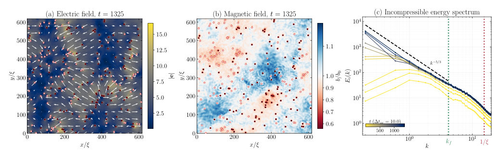
<figcaption class="paper-figure-caption"><b>Fig 1.</b> FIG. 1. A snapshot of (a) electric fields (e, or the π/2−rotated superfluid current) and (b) normalized magnetic fields (b/b0, where b0 is the average magnetic field, or the superfluid density) at a time t = 1325 (in units of ℏ/µ), obtained under turbulent dynamics of a two dimensional superfluid with g = 500 (in units of ℏ2/2m, and gb0/(2π) ≈119) using the dual hydrodynamical equations (Eqs. (13a), (13b) and (13c)). The snapshot is taken at a representative time when the cascade in the incompressible kinetic energy is well developed. The point-vortices are depicted by unfilled and filled circles, corresponding to vortices of opposite sign. (c) Incompressible kinetic energy Ei(k), plotted...</figcaption>
</figure>
<figure class="paper-figure-card">
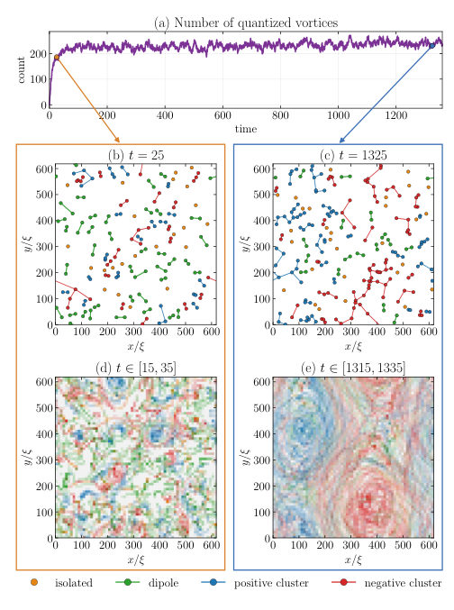
<figcaption class="paper-figure-caption"><b>Fig 2.</b> FIG. 2. (a) Total number of vortices as a function of time in the superfluid dynamics. (b) and (c): Vortex positions at time t = 25 and t = 1325 respectively. The vortices have been classified into positive (blue) and negative (red) clusters and dipoles (green). The remaining isolated vortices are colored in orange [19]. (d) and (e): Corresponding vortex distribution averaged over a time window of 20 (in units of ℏ/µ) at early and late times.</figcaption>
</figure>
<figure class="paper-figure-card">
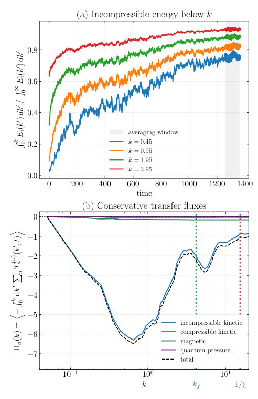
<figcaption class="paper-figure-caption"><b>Fig 3.</b> FIG. 3. (a) Time evolution of the ratio of incompressible en- ergy within a sphere of radius k to the total incompressible energy. (b) Total conservative energy flux Πa(k) for all en- ergy channels a = i, c, b, Q (incompressible and compressible kinetic energy, magnetic and quantum pressure energy) as a function of wavenumber k, averaged over the time window t ∈[1260, 1360].</figcaption>
</figure>
<figure class="paper-figure-card">
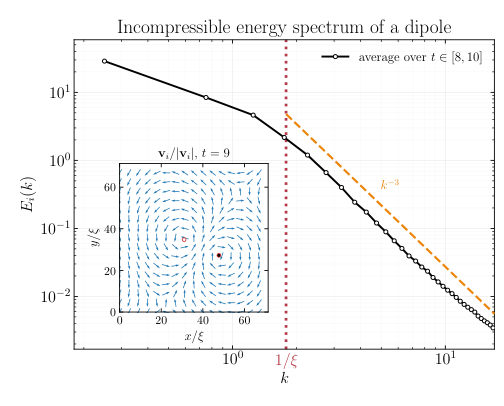
<figcaption class="paper-figure-caption"><b>Fig 4.</b> FIG. 4. Incompressible kinetic energy spectrum of a single vortex-anti-vortex pair at g = 1, b0 = 10.0 (gb0/(2π) = 1.6). At scales kξ ≫1, the spectrum follows a k−3 power law scal- ing, as indicated by the orange reference line. The inset shows a snapshot of the incompressible velocity field at t = 9.0.</figcaption>
</figure>
<figure class="paper-figure-card">
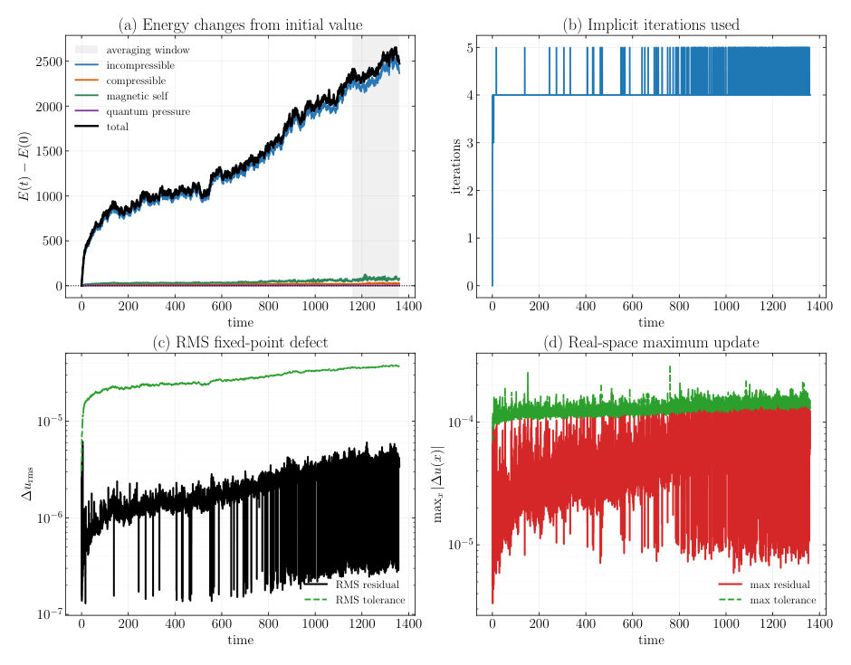
<figcaption class="paper-figure-caption"><b>Fig 5.</b> FIG. 5. Diagnostics of numerical algorithm. (a) Energy change as a function of time relative to the initial energy E(0) for each energy contribution in the Lagrangian. (b) Number of iterations used in the implicit adaptive solver until convergence is reached. (c) RMS and (d) maximum value of the residual of the velocity update in the last iteration, compared to the RMS and maximum tolerance value, respectively.</figcaption>
</figure>
</div>

<p><strong>Summary.</strong> The paper develops a dual gauge theory to model turbulent hydrodynamics in 2D superfluids, treating the system via coupled vortex and emergent gauge fields. It successfully derives equations of motion that reproduce known hydrodynamic behaviors, such as Kolmogorov scaling and an inverse energy cascade. This provides a rigorous theoretical framework for understanding quantum turbulence.</p>
<p><strong>Why it may be interesting.</strong> This work connects superfluid dynamics (a topic often studied with BECs) to advanced field theories (gauge theory), providing a powerful mathematical toolset for understanding non-equilibrium many-body fluid phenomena relevant to quantum gases.</p>
<details>
<summary>Detailed structure</summary>
<p><strong>Main problem.</strong> The study focuses on theoretically describing the turbulent hydrodynamics of superfluids confined to two spatial dimensions.</p>
<p><strong>Main result.</strong> The authors show that a dual gauge theory framework successfully models superfluid turbulence, predicting an inverse energy cascade consistent with theoretical expectations for 2D fluids.</p>
<p><strong>Method.</strong> They employ a dual gauge theory approach, mapping the fluid dynamics onto coupled equations governing emergent U(1) gauge fields and point-like vortices.</p>
<p><strong>Model / system.</strong> The system is a two-dimensional superfluid described by a complex order parameter $\psi$. Turbulence is modeled using quantized vortices coupled to an emergent 2+1 dimensional U(1) gauge field, leading to dual equations of motion.</p>
<p><strong>Key observables.</strong> Kinetic energy spectrum $E(k)$, energy transfer fluxes ($\Pi_a^\chi$), and the evolution of magnetic ($b$) and electric ($e$) fields.</p>
<p><strong>Important parameters / regimes.</strong> The system exhibits distinct scaling regimes, including Kolmogorov's $k^{-5/3}$ law and a predicted inverse energy cascade towards low wavenumbers.</p>
<p><strong>Assumptions / limitations.</strong> Key approximations include treating vortices as point-like particles and deriving the hydrodynamics from the dual gauge theory in specific limits (e.g., $g 	o \infty$).</p>
<p><strong>Figures summary.</strong> Figures illustrate snapshots of vortex clustering, energy spectra confirming power-law scaling consistent with Kolmogorov's law, and time evolution plots showing energy transfer fluxes.</p>
<p><strong>Paper structure.</strong> The paper builds from the classical fluid description to the proposed dual gauge theory framework. It then details the coupled equations for the fields, analyzes the resulting energy balance equation in Fourier space, and finally presents numerical results confirming scaling laws and cascade behavior.</p>
</details>
<details>
<summary>Abstract</summary>
<p>We describe turbulent hydrodynamics of superfluids in two spatial dimensions via the dynamics of point-like vortices coupled to an emergent 2+1 dimensional $U(1)$ gauge field. The cascade of superfluid kinetic energy is equivalently described by a cascade of dual electric field energies. We study superfluid turbulence using the equations of motion of the dual gauge theory in the presence of a drive and dissipation. In the limit that the vortices are point-like, the dual equations of motion directly yield the hydrodynamical equations of the superfluid. We obtain a turbulent cascade consistent with Kolmogorov's scaling law for two dimensional fluid turbulence. We observe clustering of like-signed vortices and compute the kinetic energy flux to show that the turbulent regime exhibits an inverse energy cascade.</p>
</details>
<p><sub><a href="#top">↑ back to top</a></sub></p>

<p><a id="paper-2608.12545"></a></p>
<h3 id="ising-machine-like-driving-condition-restrictions-in-ssbm-and-additional-pseudo-annealing-driving-method-for-ssbm-that-achieves-best-cut-value-search-"><a href="http://arxiv.org/abs/2608.12545v1">Ising-machine-like Driving Condition Restrictions in SSBM and Additional Pseudo-annealing- Driving Method for SSBM that Achieves Best Cut Value Search -</a></h3>
<p><strong>Authors:</strong> Toshiya Sato<br>
<strong>Type:</strong> theory · <strong>Category:</strong> disordered systems and neural networks · <strong>PDF:</strong> <a href="https://arxiv.org/pdf/2608.12545v1">https://arxiv.org/pdf/2608.12545v1</a><br>
<strong>Analysis basis:</strong> full PDF text, analyzed in chunks
<strong>Topic relevance:</strong> <code>driven-dissipative phase transition</code> <strong>3/5</strong> · <code>methods for driven-dissipative</code> <strong>3/5</strong> · <code>non-equilibrium universality</code> <strong>2/5</strong> · <code>Keldysh / 2PI / non-Gaussian methods</code> <strong>1/5</strong> · <code>analog quantum simulation</code> <strong>1/5</strong> · <code>correlated / nonlocal dissipation</code> <strong>1/5</strong> · <code>scars &amp; prethermalization</code> <strong>1/5</strong></p>
<div class="figure-strip-hint">↔ Scroll figures horizontally</div>
<div class="paper-figures-scroll">
<figure class="paper-figure-card">
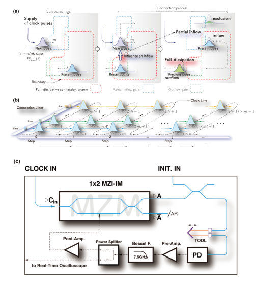
<figcaption class="paper-figure-caption"><b>Fig 1.</b> FIG. 1. Set-up of nest-type dissipative system using polarized optical coherent clock pulses and 1 × 2MZM as partial inflow gate of the FDCS.</figcaption>
</figure>
<figure class="paper-figure-card">
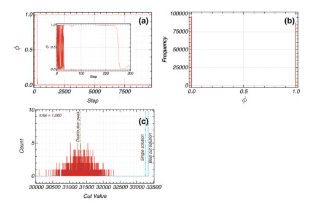
<figcaption class="paper-figure-caption"><b>Fig 2.</b> FIG. 2. Behavior of SSBM under a restriction condition following the continuous-variable-type Ising machines (sim- ulation results for the K2000 problem). (a) Step evolutions of continuous-variables ϕi (pseudo-spins) (20 samples, 9699 steps), (b) Histogram of pseudo-spin values (20 samples, to- tal=193,980 counts), (c) Histogram of cut values explored in 1,000 simulations.</figcaption>
</figure>
<figure class="paper-figure-card">
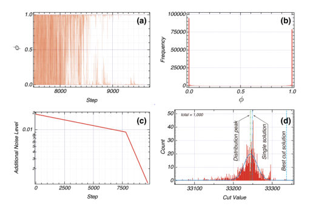
<figcaption class="paper-figure-caption"><b>Fig 3.</b> FIG. 3. Behavior of SSBM in the case where a pseudo- annealing effect is added under the restricted conditions (sim- ulation results for the K2000 problem). (a) Step evolutions of pseudo-spins (20 samples, 9699 steps), (b) Histogram of pseudo-spin values (20 samples, total=193,980 counts), (c) Scheduling of additional noise levels for pseudo-annealing.</figcaption>
</figure>
</div>

<p><strong>Summary.</strong> The paper improves a specialized simulator called the SSBM for solving combinatorial optimization problems. It achieves this by modifying the machine's driving conditions to mimic continuous-variable Ising machines and by incorporating a pseudo-annealing effect. These modifications allow the physical simulator to search more effectively, reaching near state-of-the-art solutions.</p>
<p><strong>Why it may be interesting.</strong> This work directly addresses how non-equilibrium dynamics (like those in dissipative physical simulators) can be tuned using concepts borrowed from thermal physics (annealing) to solve hard optimization problems, which is highly relevant for quantum computation and complex system modeling.</p>
<details>
<summary>Detailed structure</summary>
<p><strong>Main problem.</strong> Developing a high-performance solver for complex combinatorial optimization problems, such as finding the best cut value for K2000.</p>
<p><strong>Main result.</strong> By restricting driving conditions and adding a pseudo-annealing effect to the SSBM, the system can achieve search performance comparable to known state-of-the-art methods, approaching the best known cut values.</p>
<p><strong>Method.</strong> The authors analyze the dynamics of the Spontaneous Symmetry Breaking Machine (SSBM) by imposing specific driving condition restrictions and introducing a pseudo-annealing term into its discrete evolution equations.</p>
<p><strong>Model / system.</strong> The core system is the SSBM, a physical simulator based on spontaneous symmetry breaking phenomena using dissipative elements. Its dynamics are governed by an iteration equation ($\phi_{i+m} = \sin^2(\gamma^2 \phi_i + 	heta_B)$) and pseudo-spin interactions.</p>
<p><strong>Key observables.</strong> The primary observable is the 'cut value' achieved during the solution search process, alongside the evolution and histogram of pseudo-spin patterns ($\phi_i$).</p>
<p><strong>Important parameters / regimes.</strong> Nesting number (restricted to 12), noise intensity schedule for annealing, and coupling parameters ($\gamma, 	heta_B$).</p>
<p><strong>Assumptions / limitations.</strong> The SSBM is treated as a discrete system, requiring the introduction of a <em>pseudo</em>-annealing effect to mimic continuous-variable techniques like those involving Nosé–Hoover methods.</p>
<p><strong>Figures summary.</strong> Figures compare SSBM behavior under simple restrictions (Point 1) versus when pseudo-annealing (Point 2) is added. The histograms show that adding annealing shifts the cut value distribution toward higher, better values.</p>
<p><strong>Paper structure.</strong> The paper first establishes the baseline performance of SSBM; it then discusses imposing quasi-static restrictions analogous to continuous IMs; finally, it introduces and validates the addition of a pseudo-annealing effect to further enhance search capability.</p>
</details>
<details>
<summary>Abstract</summary>
<p>In our previous paper, we described the proposal and validation of a new physical implementation-type simulator (spontaneous symmetry breaking machine (SSBM)) for a combinatorial optimization problem that utilizes a phenomenon dual to the model in which a pseudo-spin many-body system is created by spontaneous symmetry breaking. Furthermore, we performed numerical simulations with different initial fluctuations on a large-scale benchmark problem (K_{2000}) and reported that we identified a condition under which pseudo-spin patterns gradually converge during the solution search process to ultimately form a single pattern and that the cut value of this converged solution reached 99.7% of the known best. In this paper, we discuss the conditions under which the SSBM can exhibit behavior analogous to that of a continuous-variable-type Ising machine, and report that by adding an effect similar to physical annealing to these conditions, the SSBM can be made to search for the best known cuts in K_{2000}.</p>
</details>
<p><sub><a href="#top">↑ back to top</a></sub></p>

<p><a id="paper-2608.13222"></a></p>
<h3 id="critical-microwave-mach-zehnder-type-interferometry-with-dual-lo-rydberg-atoms"><a href="http://arxiv.org/abs/2608.13222v1">Critical Microwave Mach-Zehnder-Type Interferometry with Dual-LO Rydberg Atoms</a></h3>
<p><strong>Authors:</strong> Jun-Rong Chen, Guo-Qing Qin, Peng-Fu Liang, He Hao, Ming-Min Zhao, Ling-Qiang Meng, Gui-Lan Li, Min-Jian Zhao, Bin-Bin Wei, Hao Tian<br>
<strong>Type:</strong> experiment · <strong>Category:</strong> other · <strong>PDF:</strong> <a href="https://arxiv.org/pdf/2608.13222v1">https://arxiv.org/pdf/2608.13222v1</a><br>
<strong>Analysis basis:</strong> full PDF text, analyzed in chunks
<strong>Topic relevance:</strong> <code>Rydberg arrays</code> <strong>3/5</strong> · <code>interference shaping light</code> <strong>3/5</strong> · <code>quantum optics experiment</code> <strong>2/5</strong> · <code>analog quantum simulation</code> <strong>1/5</strong> · <code>quantum measurements</code> <strong>1/5</strong></p>
<div class="figure-strip-hint">↔ Scroll figures horizontally</div>
<div class="paper-figures-scroll">
<figure class="paper-figure-card">
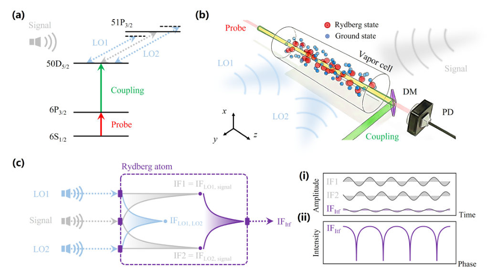
<figcaption class="paper-figure-caption"><b>Fig 1.</b> Figure 1. Dual-LO Mach-Zehnder-type microwave interferometry. (a) Energy-level diagram of Cs atoms. A probe beam and a coupling beam drive a two-photon EIT process, exciting Cs atoms from the ground state 6S1/2 to the Rydberg state 50D5/2. Two local oscillator fields (LO1 and LO2) are symmetrically detuned about the signal field frequency and are both near-resonant with the Rydberg transition 50D5/2 →51P3/2. (b) Schematic of the dual-LO microwave interferometry setup. The counter-propagating probe and coupling beams traverse the atomic vapor cell collinearly. The microwave-induced atomic response is encoded in the transmitted probe field and is read out as the output IF signal by a...</figcaption>
</figure>
<figure class="paper-figure-card">
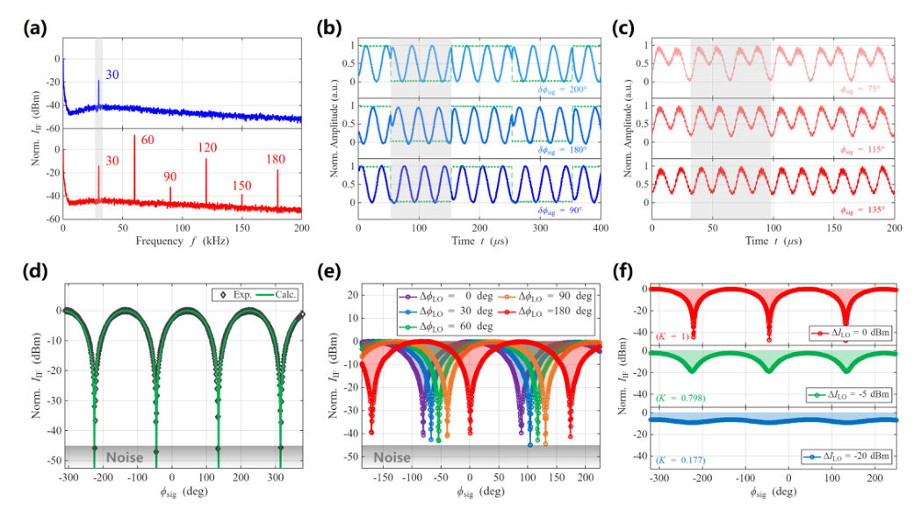
<figcaption class="paper-figure-caption"><b>Fig 2.</b> Figure 2. Response characteristics of the dual-LO Mach-Zehnder-type microwave interferometer. (a) Output IF spectra obtained using the conventional single-LO superheterodyne scheme (upper panel) and the proposed dual-LO interfer- ometric scheme (lower panel). (b) Output IF signals under the single-LO standard superheterodyne scheme for varying signal field phase shifts. The upper, middle, and lower panels correspond to phase shifts of 200◦, 180◦, and 90◦, respectively. The green dashed lines indicate the trigger signals for the phase modulation. (c) Output IF signals under the dual-LO interferom- etry scheme for different signal field phases. The upper, middle, and lower panels correspond...</figcaption>
</figure>
<figure class="paper-figure-card">
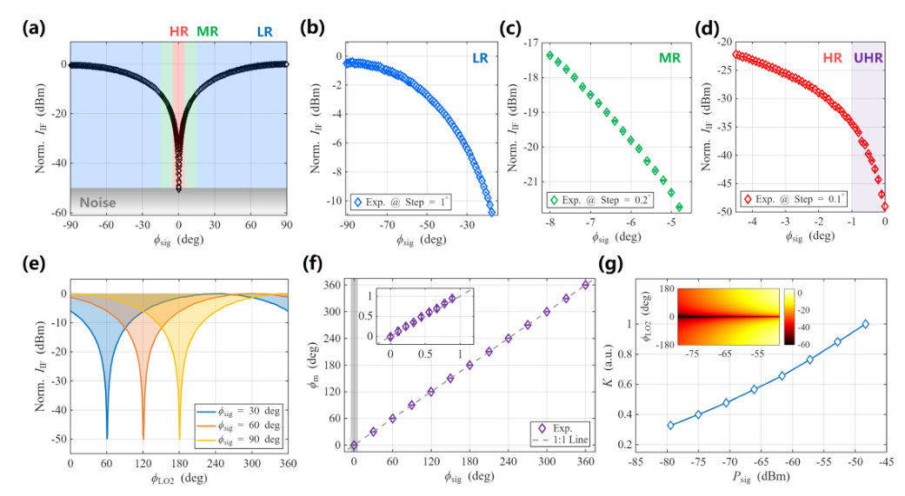
<figcaption class="paper-figure-caption"><b>Fig 3.</b> Figure 3. High-precision phase retrieval using the dual-LO Mach-Zehnder-type microwave interferometer.. (a) Interferometric response as a function of signal-field phase over the range from −90◦to +90◦. The phases of LO1 and LO2 are fixed at 0◦and 180◦, respectively. As the signal phase approaches the critical interference point, the response slope increases significantly. According to the local transfer slope, the response can be divided into low-resolution (LR, blue shaded), medium- resolution (MR, green shaded), and high-resolution (HR, red shaded) regions. (b–d) Enlarged views of the LR, MR, and HR regions, corresponding to phase step sizes of 1◦, 0.2◦, and 0.1◦, respectively. Within the...</figcaption>
</figure>
<figure class="paper-figure-card">
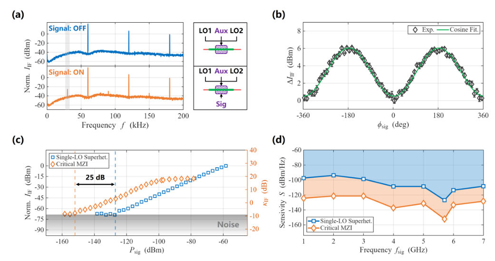
<figcaption class="paper-figure-caption"><b>Fig 4.</b> Figure 4. Critical-point-enhanced sensitivity in the Mach-Zehnder-type interferometer. (a) Output IF spectra measured with LO1, LO2, and the auxiliary field (Aux) present simultaneously, in the absence (upper panel) and presence (lower panel) of the external signal field. The phases of LO1, LO2, and Aux are fixed at 0◦, 0◦, and 90◦, respectively. The insets schematically illustrate the corresponding operating conditions of the interferometer. The red and green line segments denote the probe and coupling laser fields, respectively, and the purple rectangle represents the atomic vapor cell. Microwave horn antennas are omitted for clarity. (b) Relative variation of the interferometric...</figcaption>
</figure>
<figure class="paper-figure-card">
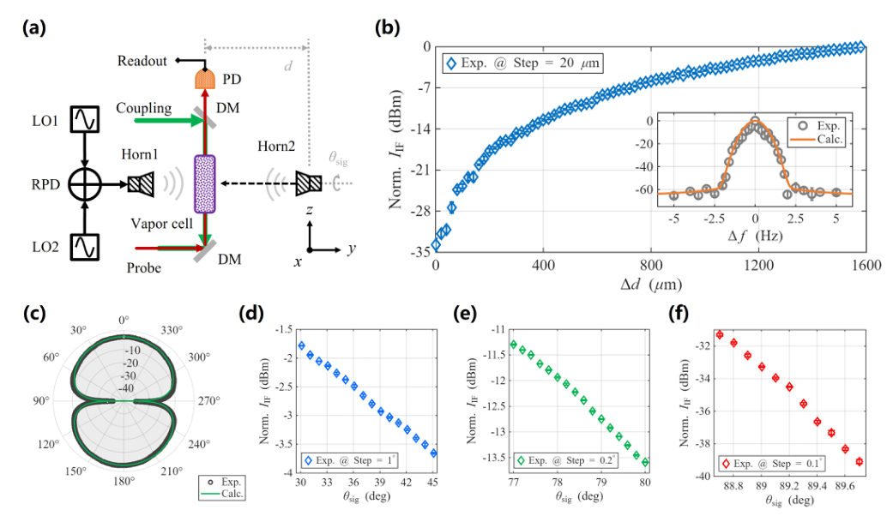
<figcaption class="paper-figure-caption"><b>Fig 5.</b> Figure 5. Interferometric microwave distance and polarization metrology. (a) Experimental configuration for in- terferometric microwave metrology. LO1 and LO2 are combined by a resistive power divider (RPD) and transmitted toward the atomic vapor cell through Horn1. The signal field is radiated directly from Horn2 to the vapor cell over a propagation distance d. Horn2 can be rotated in the x–z plane, defining the signal polarization angle θsig with respect to Horn1. The interferometric IF signal is read out from the transmitted probe field by a photodetector (PD). (b) Measured interferometric intensity IIF as a function of the distance variation ∆d. Error bars represent the standard...</figcaption>
</figure>
</div>

<p><strong>Summary.</strong> The authors present a novel Rydberg-atom-based Mach-Zehnder interferometer using a dual-local-oscillator configuration to measure microwave fields. This setup overcomes limitations of prior methods by achieving high phase resolution and exceptional sensitivity enhancement near critical interference points. The resulting framework is simple, scalable, and applicable for multi-parameter metrology including distance and polarization sensing.</p>
<p><strong>Why it may be interesting.</strong> This work provides a highly scalable quantum platform for microwave metrology by engineering an interference scheme that converts weak phase shifts into large measurable intensity changes, which is crucial for advancing practical quantum sensors.</p>
<details>
<summary>Detailed structure</summary>
<p><strong>Main problem.</strong> The core challenge is achieving high-precision phase measurement of microwave fields while overcoming trade-offs in resolution, range, and system complexity inherent in existing Rydberg-atom sensing methods.</p>
<p><strong>Main result.</strong> The proposed dual-LO Mach-Zehnder interferometer achieves direct phase retrieval with $>0.1^\circ$ resolution and demonstrates a sensitivity enhancement exceeding 25 dB near the critical interference point.</p>
<p><strong>Method.</strong> The technique uses two local oscillators to create two coherent interferometric pathways in the Rydberg medium, whose recombination forms an intermediate-frequency signal sensitive to the input microwave phase.</p>
<p><strong>Model / system.</strong> The system is a Mach-Zehnder type interferometer implemented using Rydberg atoms. It employs a dual-local-oscillator (dual-LO) configuration that establishes two coherent pathways for mixing with the signal field, avoiding complex optical setups.</p>
<p><strong>Key observables.</strong> Phase ($\phi$), intensity ($I_{	ext{Itf}}$), propagation distance ($\delta d$), and polarization angle ($    heta$).</p>
<p><strong>Important parameters / regimes.</strong> Phase resolution ($>0.1^\circ$), sensitivity enhancement ($>25 	ext{ dB}$), distance precision ($< 20 \mu	ext{m}$ at $5.7 	ext{ GHz}$).</p>
<p><strong>Assumptions / limitations.</strong> The method assumes the ability to establish and control two coherent LO pathways and relies on operating near a critical interference point for maximum sensitivity.</p>
<p><strong>Figures summary.</strong> Figures illustrate the energy-level diagram, the dual-LO setup schematic, the coherent mixing process forming $    ext{IF}_{   ext{total}}$, and response curves demonstrating phase retrieval across different resolution regimes (LR, MR, HR).</p>
<p><strong>Paper structure.</strong> The paper introduces the problem of microwave metrology, details the dual-LO Mach-Zehnder interferometer model, derives the intensity dependence on accumulated phase, quantifies the enhanced sensitivity near critical points, and finally demonstrates applications to distance and polarization sensing.</p>
</details>
<details>
<summary>Abstract</summary>
<p>High-precision phase measurement of microwave fields underpins a wide range of applications, including wireless communications, distributed radar, plasma diagnostics, and antenna metrology. Existing Rydberg-atom-based approaches, however, often face trade-offs among phase resolution, measurement range, and system complexity. Here we demonstrate a Rydberg-atom-based microwave Mach-Zehnder-type interferometer using a dual-local-oscillator configuration. The two local oscillators establish two coherent interferometric pathways in the Rydberg medium. Their coherent mixing with the signal field produces an interferometric intermediate-frequency output governed by a phase-to-intensity transfer characteristic that enables critical-point enhancement. This scheme supports direct phase retrieval with a resolution exceeding $0.1^\circ$ and unambiguous full $360^\circ$ phase coverage with the reconfigurable dual-LO architecture. Moreover, near the critical interference point, the system exhibits a sharply enhanced phase-to-amplitude transduction, where weak amplitude variations are converted into pronounced phase responses, yielding a sensitivity enhancement exceeding 25 dB. Besides, the same interferometric transfer mechanism enables microwave propagation-distance and polarization metrology, achieving a propagation-distance precision below 20 $μ$m at 5.7 GHz together with a polarization-angle resolution exceeding $0.1^\circ$. This approach eliminates the need for complex optical configurations and lock-in detection, providing a simple, scalable, and reconfigurable Mach-Zehnder-type quantum microwave interferometry framework for multifunctional high-precision microwave metrology.</p>
</details>
<p><sub><a href="#top">↑ back to top</a></sub></p>

<p><a id="paper-2608.13338"></a></p>
<h3 id="robust-genuine-multipartite-entanglement-in-two-walker-quantum-walks"><a href="http://arxiv.org/abs/2608.13338v1">Robust Genuine Multipartite Entanglement in Two Walker Quantum Walks</a></h3>
<p><strong>Authors:</strong> Sandipan Hazra, Tamoghna Das, Sougato Bose, Sonjoy Majumder<br>
<strong>Type:</strong> theory · <strong>Category:</strong> quantum information and computing · <strong>PDF:</strong> <a href="https://arxiv.org/pdf/2608.13338v1">https://arxiv.org/pdf/2608.13338v1</a><br>
<strong>Analysis basis:</strong> full PDF text, analyzed in chunks
<strong>Topic relevance:</strong> <code>analog quantum simulation</code> <strong>3/5</strong> · <code>driven-dissipative phase transition</code> <strong>2/5</strong> · <code>non-equilibrium universality</code> <strong>2/5</strong> · <code>correlated / nonlocal dissipation</code> <strong>1/5</strong> · <code>methods for driven-dissipative</code> <strong>1/5</strong> · <code>scars &amp; prethermalization</code> <strong>1/5</strong></p>
<div class="figure-strip-hint">↔ Scroll figures horizontally</div>
<div class="paper-figures-scroll">
<figure class="paper-figure-card">
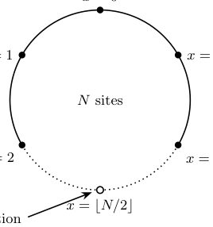
<figcaption class="paper-figure-caption"><b>Fig 1.</b> FIG. 1. One-dimensional lattice with periodic boundary conditions. The lattice sites are labelled by x = 0, 1, 2, . . . , N − 1, with the identification |x + N⟩≡|x⟩. The walkers are initially localized at the central lattice site x = ⌊N/2⌋, where ⌊·⌋denotes the floor function. The periodic identification makes the sites x = 0 and x = N −1 nearest neighbours, resulting in a closed lattice topology.</figcaption>
</figure>
<figure class="paper-figure-card">
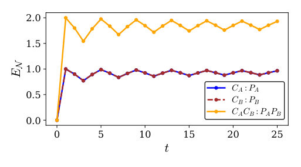
<figcaption class="paper-figure-caption"><b>Fig 2.</b> FIG. 2. (Color online.) Time evolution of bipartite entangle- ment (in ebit unit) in various bipartitions has been plotted as a function of number of steps t ( dimensionless), in the two-walker DTQW, when the initial coin: coin quantum state is a product state |ψ1⟩CACB = |01⟩CACB. The entanglement has been calculated with the help of logarithmic negativity in the bipartitions CA : PA (by the solid blue line) and CB : PB (by the dashed brown line) CACB : PAPB (by the solid or- ange curve). Here we consider the open-boundary regime with N = 51 lattice points and a maximum allowed step count of T = 25.</figcaption>
</figure>
<figure class="paper-figure-card">
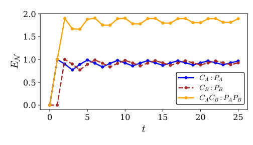
<figcaption class="paper-figure-caption"><b>Fig 3.</b> FIG. 3. (Color online.) Time evolution of bipartite entangle- ment (in ebit unit) in various bipartitions has been plotted as a function of number of steps t ( dimensionless), in the two-walker DTQW, when the initial coin: coin quantum state is a product state |ψ2⟩CACB = |0+⟩CACB. The entanglement has been calculated with the help of logarithmic negativity in the bipartitions CA : PA (by the solid blue line) and CB : PB (by the dashed brown line) CACB : PAPB (by the solid orange curve). Here, we consider the open-boundary regime with N = 51 lattice points and a maximum allowed step count of T = 25.</figcaption>
</figure>
<figure class="paper-figure-card">
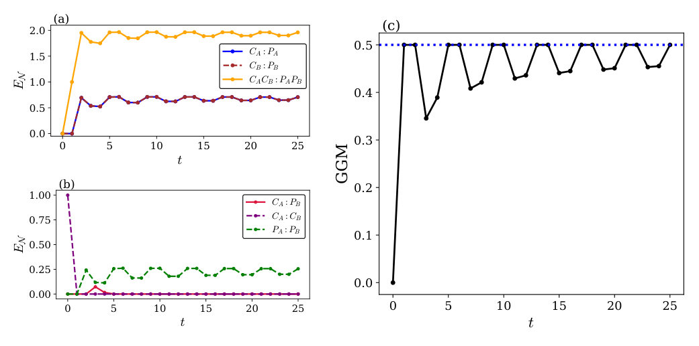
<figcaption class="paper-figure-caption"><b>Fig 4.</b> FIG. 4. (Color online.) Time evolution of bipartite entanglement (in ebit unit) in various bipartitions and GGM (dimensionless) has been plotted as a function of number of steps t (dimensionless), in the two-walker DTQW, when the initial coin: coin quantum state is |ψ3⟩CACB = 1 √</figcaption>
</figure>
<figure class="paper-figure-card">
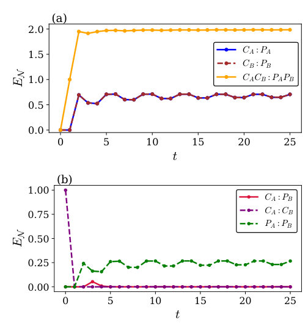
<figcaption class="paper-figure-caption"><b>Fig 5.</b> FIG. 5. (Color online.) Time evolution of bipartite entangle- ment (in ebit unit) in various bipartitions has been plotted as a function of number of steps t (dimensionless), in the two-walker DTQW, when the initial coin: coin quantum state is |ψ4⟩CACB = 1 √</figcaption>
</figure>
</div>

<p><strong>Summary.</strong> This paper investigates how entanglement—both bipartite and genuine multipartite—evolves in two-walker discrete-time quantum walks. Using advanced measures like the GGM, the authors demonstrate that open boundary conditions naturally lead to the generation of maximal, robust multipartite entanglement. This establishes these quantum walk systems as promising tools for quantum information processing.</p>
<p><strong>Why it may be interesting.</strong> This work directly addresses quantum information processing by providing a physical platform (quantum walks) where multipartite correlations can be engineered robustly, which is highly relevant for quantum simulation and computation.</p>
<details>
<summary>Detailed structure</summary>
<p><strong>Main problem.</strong> The study focuses on characterizing the generation, evolution, and robustness of genuine multipartite entanglement in composite quantum systems using two-walker discrete-time quantum walks.</p>
<p><strong>Main result.</strong> Maximal genuine multipartite entanglement generation is shown to be a robust and generic feature of open-boundary two-walker DTQWs, making them promising platforms for engineering quantum correlations.</p>
<p><strong>Method.</strong> The authors employ logarithmic negativity to track bipartite entanglement and the generalized geometric measure (GGM) to quantify genuine multipartite entanglement dynamics.</p>
<p><strong>Model / system.</strong> The model is a two-walker discrete-time quantum walk on a one-dimensional lattice, incorporating both internal (coin) and external (position) degrees of freedom. The analysis compares open-boundary (free movement) versus closed-boundary (periodic) regimes.</p>
<p><strong>Key observables.</strong> Logarithmic negativity (for bipartite entanglement) and the Generalized Geometric Measure (GGM) for genuine multipartite entanglement.</p>
<p><strong>Important parameters / regimes.</strong> Lattice topology (open vs. closed boundary), initial Bell state, and local coin operator choice (e.g., Hadamard or Pauli-X).</p>
<p><strong>Assumptions / limitations.</strong> The analysis assumes the validity of using DTQWs as a model for quantum correlation transport and relies on specific mathematical measures to quantify entanglement.</p>
<p><strong>Figures summary.</strong> Figures illustrate the one-dimensional lattice structure, showing periodic boundary conditions, and demonstrate time evolution plots of GGM under different coin operators (e.g., Pauli-X).</p>
<p><strong>Paper structure.</strong> The paper systematically analyzes entanglement dynamics by first defining the two-walker DTQW framework, then comparing correlation redistribution in open versus closed boundaries, culminating in demonstrating the robustness of maximal GME generation.</p>
</details>
<details>
<summary>Abstract</summary>
<p>Discrete-time quantum walks provide a versatile framework for investigating the generation, redistribution, and transport of quantum correlations in composite quantum systems. Here, we study the dynamics of bipartite and genuine multipartite entanglement in a two-walker discrete-time quantum walk on a one-dimensional lattice. By employing logarithmic negativity and the generalized geometric measure (GGM), we systematically characterize the redistribution of bipartite entanglement among different subsystem partitions and the emergence of genuine multipartite entanglement involving the two coin and two position degrees of freedom. We show that the entanglement dynamics are strongly influenced by the lattice topology. The open-boundary regime exhibits a monotonic redistribution of quantum correlations, whereas the closed-boundary regime gives rise to pronounced oscillatory behavior due to boundary-induced interference and recurrent wave-packet overlap. In the open-boundary regime, the GGM rapidly approaches its theoretical maximum value of $1/2$ and remains largely insensitive to the choice of the initial Bell state as well as to continuous variations of the local coin operator over a broad parameter range, except near the Pauli-$X$ coin. These results demonstrate that maximal genuine multipartite entanglement generation is a robust and generic feature of open-boundary two-walker discrete-time quantum walks, establishing them as promising platforms for engineering multipartite quantum correlations in quantum information processing and quantum simulation.</p>
</details>
<p><sub><a href="#top">↑ back to top</a></sub></p>

<p><a id="paper-2608.13449"></a></p>
<h3 id="spectral-localization-principle-for-entanglement-harvesting"><a href="http://arxiv.org/abs/2608.13449v1">Spectral Localization Principle for Entanglement Harvesting</a></h3>
<p><strong>Authors:</strong> Hao Xu<br>
<strong>Type:</strong> theory · <strong>Category:</strong> other · <strong>PDF:</strong> <a href="https://arxiv.org/pdf/2608.13449v1">https://arxiv.org/pdf/2608.13449v1</a><br>
<strong>Analysis basis:</strong> full PDF text, analyzed in chunks
<strong>Topic relevance:</strong> <code>correlated / nonlocal dissipation</code> <strong>3/5</strong> · <code>Tavis-Cummings &amp; cavity-many-emitter</code> <strong>2/5</strong> · <code>quantum measurements</code> <strong>2/5</strong> · <code>analog quantum simulation</code> <strong>1/5</strong> · <code>driven-dissipative phase transition</code> <strong>1/5</strong> · <code>methods for driven-dissipative</code> <strong>1/5</strong></p>
<div class="figure-strip-hint">↔ Scroll figures horizontally</div>
<div class="paper-figures-scroll">
<figure class="paper-figure-card">
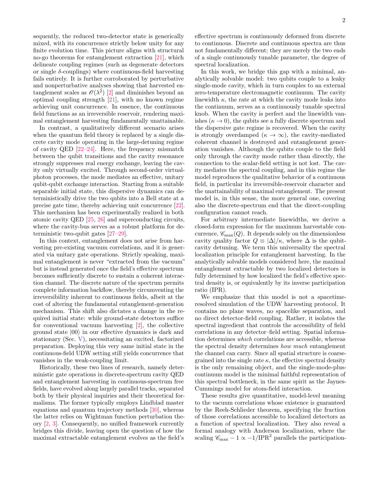
<figcaption class="paper-figure-caption"><b>Fig 1.</b> Low-resolution page preview, page 2</figcaption>
</figure>
<figure class="paper-figure-card">
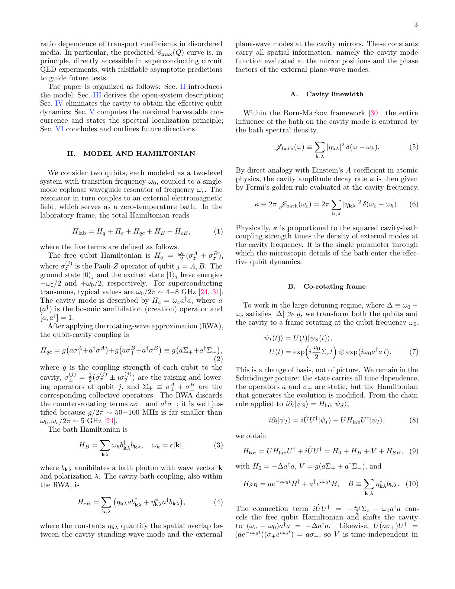
<figcaption class="paper-figure-caption"><b>Fig 2.</b> Low-resolution page preview, page 3</figcaption>
</figure>
<figure class="paper-figure-card">
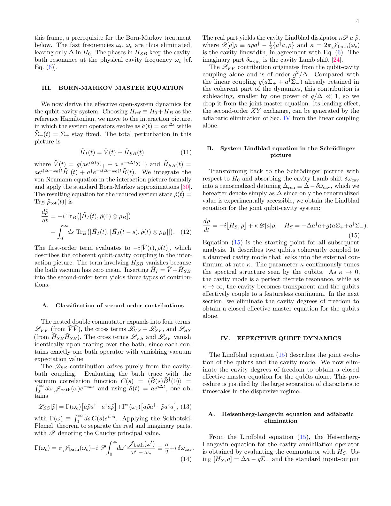
<figcaption class="paper-figure-caption"><b>Fig 3.</b> Low-resolution page preview, page 4</figcaption>
</figure>
<figure class="paper-figure-card">
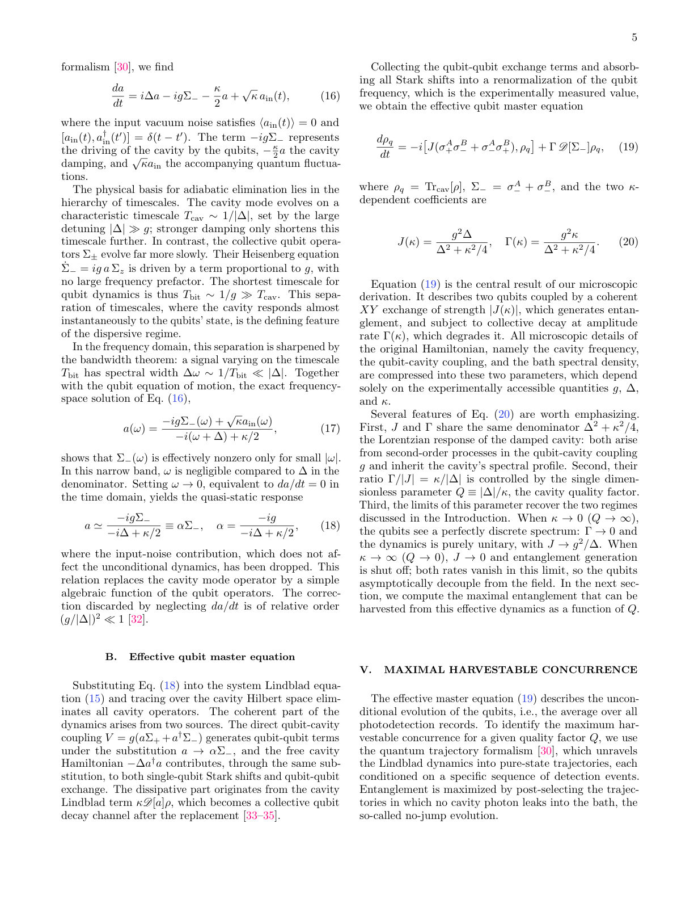
<figcaption class="paper-figure-caption"><b>Fig 4.</b> Low-resolution page preview, page 5</figcaption>
</figure>
<figure class="paper-figure-card">
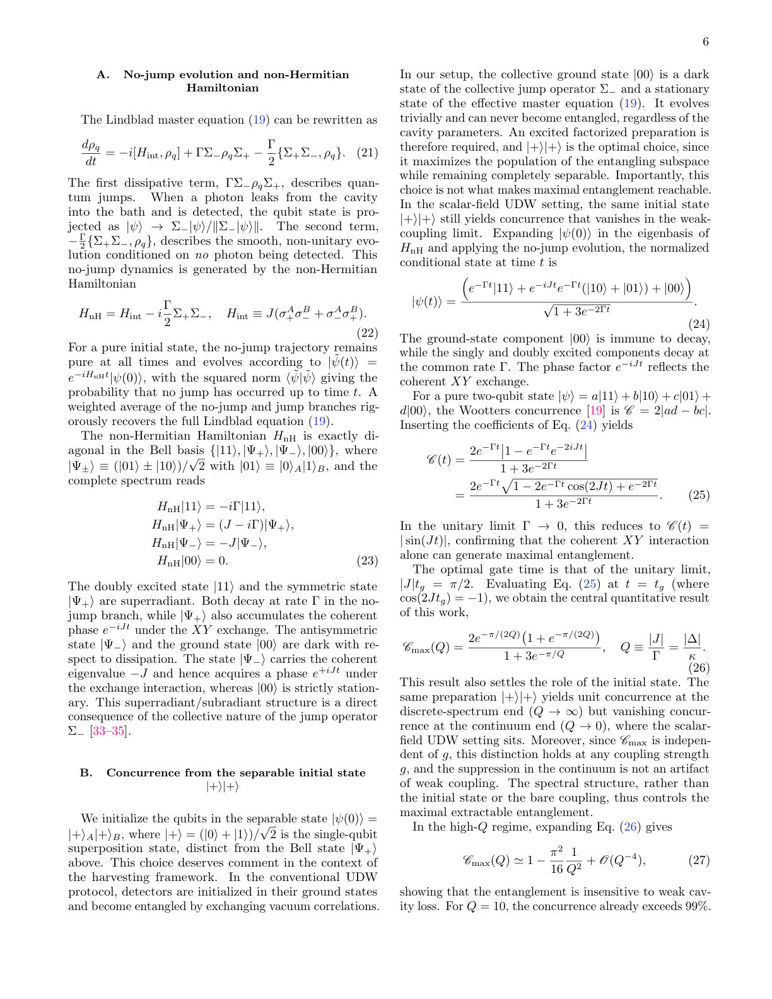
<figcaption class="paper-figure-caption"><b>Fig 5.</b> Low-resolution page preview, page 6</figcaption>
</figure>
</div>

<p><strong>Summary.</strong> This work proposes the Spectral Localization Principle, stating that extractable entanglement depends only on how localized the field's spectral density is. Using an analytically solvable model of qubits coupled to a leaky cavity, the authors derive a closed-form expression for maximum concurrence based on the parameter $Q$. This framework bridges deterministic gate operations with vacuum harvesting by drawing formal analogies to localization phenomena.</p>
<p><strong>Why it may be interesting.</strong> It directly connects concepts from condensed matter physics (Anderson localization, IPR) to quantum information theory (entanglement harvesting), providing a quantitative diagnostic tool for vacuum correlations observable in superconducting circuit QED experiments.</p>
<details>
<summary>Detailed structure</summary>
<p><strong>Main problem.</strong> To establish a unified physical principle—the Spectral Localization Principle—governing how much entanglement can be extracted from a quantum field by localized detectors.</p>
<p><strong>Main result.</strong> The maximum harvestable concurrence, $C_{\max}(Q)$, is determined solely by the spectral localization parameter $Q$, showing robustness in the high-$Q$ limit and exponential decay in the low-$Q$ limit.</p>
<p><strong>Method.</strong> Analytical derivation of the maximum concurrence using an analytically solvable model and applying adiabatic elimination to derive an effective master equation for the qubits.</p>
<p><strong>Model / system.</strong> The system consists of two qubits coupled to a leaky single-mode cavity, which is itself coupled to a continuous electromagnetic bath. The dynamics are governed by a Lindblad master equation after eliminating the cavity degrees of freedom.</p>
<p><strong>Key observables.</strong> Maximum harvestable concurrence ($\mathcal{C}_{\max}$), which quantifies accessible vacuum correlations.</p>
<p><strong>Important parameters / regimes.</strong> $Q \equiv |\Delta|/\kappa$, the ratio of qubit-cavity detuning to cavity linewidth; $\kappa$ (linewidth); IPR (Inverse Participation Ratio).</p>
<p><strong>Assumptions / limitations.</strong> The model assumes a Born-Markov approximation and uses adiabatic elimination, which requires a large separation between qubit and cavity timescales.</p>
<p><strong>Paper structure.</strong> The paper introduces the principle, models the system using coupled qubits/cavity/bath Hamiltonian, derives the master equation via adiabatic elimination, calculates $C_{\max}(Q)$ in closed form, and analyzes its behavior in high-Q (deterministic) and low-Q (vacuum harvesting) limits.</p>
</details>
<details>
<summary>Abstract</summary>
<p>We propose a unified physical principle for entanglement harvesting: the entanglement that two localized detectors can extract from a quantum field is determined solely by how localized the field's effective spectral density is. We demonstrate this in an analytically solvable model of two qubits coupled to a leaky single-mode cavity, which in turn couples to a continuous electromagnetic bath, and derive the maximum harvestable concurrence in closed form, $\mathcal{C}_{\max}(Q)=2e^{-π/(2Q)}(1+e^{-π/(2Q)})/(1+3e^{-π/Q})$, where $Q\equiv|Δ|/κ$ is the ratio of the qubit-cavity detuning $Δ$ to the cavity linewidth $κ$. In the high-$Q$ limit, $\mathcal{C}_{\max}\simeq1-π^{2}/(16Q^{2})$, so the entanglement is robust against cavity loss; in the low-$Q$ limit it decays exponentially to zero, consistent with the irreversible-reservoir character of a continuous field, where maximal entanglement is unattainable. Since $Q$ is proportional to the inverse participation ratio (IPR) of the effective spectral density, it is the single dimensionless parameter governing the crossover from deterministic gate-based entanglement ($Q\to\infty$) to vacuum harvesting ($Q\to0$). Our framework operationalizes the Reeh-Schlieder theorem by quantifying the fraction of vacuum correlations accessible to localized detectors. It also reveals a formal correspondence of the maximal concurrence with the IPR, analogous to the conductivity-participation-ratio relation in Anderson localization. The predicted $\mathcal{C}_{\max}(Q)$ curve is, in principle, directly observable in superconducting circuit QED experiments.</p>
</details>
<p><sub><a href="#top">↑ back to top</a></sub></p>

<p><a id="paper-2608.13521"></a></p>
<h3 id="exponential-quantum-advantage-for-learning-signals-with-a-single-qubit"><a href="http://arxiv.org/abs/2608.13521v1">Exponential quantum advantage for learning signals with a single qubit</a></h3>
<p><strong>Authors:</strong> Ishaan Kannan, Sridhar Prabhu, Saeed A. Khan, Mandar M. Sohoni, Xingrui Song, Saswata Roy, Alen Senanian, Valla Fatemi, Peter L. McMahon, Jordan Cotler<br>
<strong>Type:</strong> both · <strong>Category:</strong> other · <strong>PDF:</strong> <a href="https://arxiv.org/pdf/2608.13521v1">https://arxiv.org/pdf/2608.13521v1</a><br>
<strong>Analysis basis:</strong> full PDF text, analyzed in chunks
<strong>Topic relevance:</strong> <code>quantum measurements</code> <strong>3/5</strong> · <code>QC/QI experiment</code> <strong>2/5</strong> · <code>Tavis-Cummings &amp; cavity-many-emitter</code> <strong>1/5</strong> · <code>analog quantum simulation</code> <strong>1/5</strong> · <code>driven-dissipative phase transition</code> <strong>1/5</strong> · <code>quantum optics experiment</code> <strong>1/5</strong></p>
<div class="figure-strip-hint">↔ Scroll figures horizontally</div>
<div class="paper-figures-scroll">
<figure class="paper-figure-card">
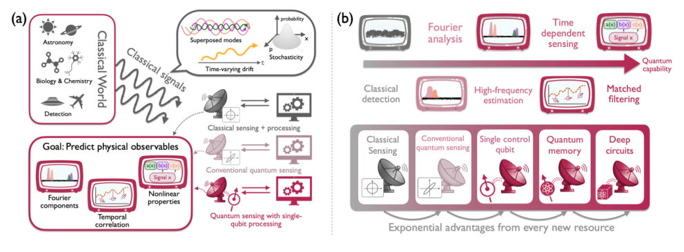
<figcaption class="paper-figure-caption"><b>Fig 1.</b> FIG. 1. Overview of exponential advantages in quantum-enhanced sensing. (a) Architectures for sensing the classical world. Data across experimental science and modern technology is transmitted through classical signals which may have superposed frequencies, time-varying drift, and stochasticity. In these realistic settings we consider sensing with near-term quantum architectures and predicting physical observables such as Fourier components, temporal correlations, and nonlinear transformation of the measured signals. Our QΨ framework encapsulates all of these settings. (b) Hierarchy of quantum-enhanced sensing architectures. As the sensing tasks become richer, sensor architectures with...</figcaption>
</figure>
<figure class="paper-figure-card">
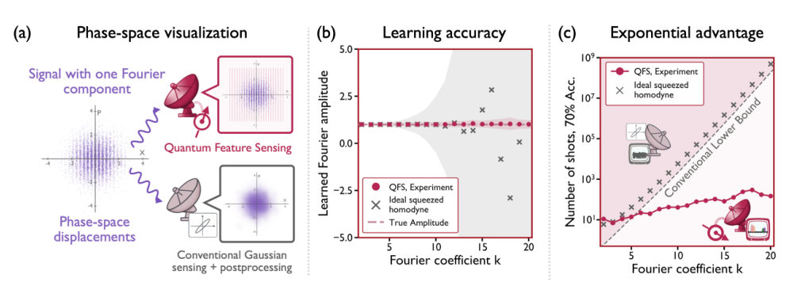
<figcaption class="paper-figure-caption"><b>Fig 2.</b> FIG. 2. Exponential quantum advantage of single-qubit control for learning Fourier amplitudes. (a) Visualization of quantum advantage. The signal contains a high-frequency phase-space Fourier component. The pictured distribution of displacements P(α), for k = 20, is implemented in our experiment. The response of single-qubit quantum feature sensing (top) acts like a frequency comb, probing fine oscillatory structure in each measurement. The response of a conventional Gaussian protocol (bottom) sees the signal severely blurred by Gaussian convolution noise. Plotted is the same signal as seen by 104 shots from QFS vs. an entangled two-mode squeezed sensor with the same energy. (b)...</figcaption>
</figure>
<figure class="paper-figure-card">
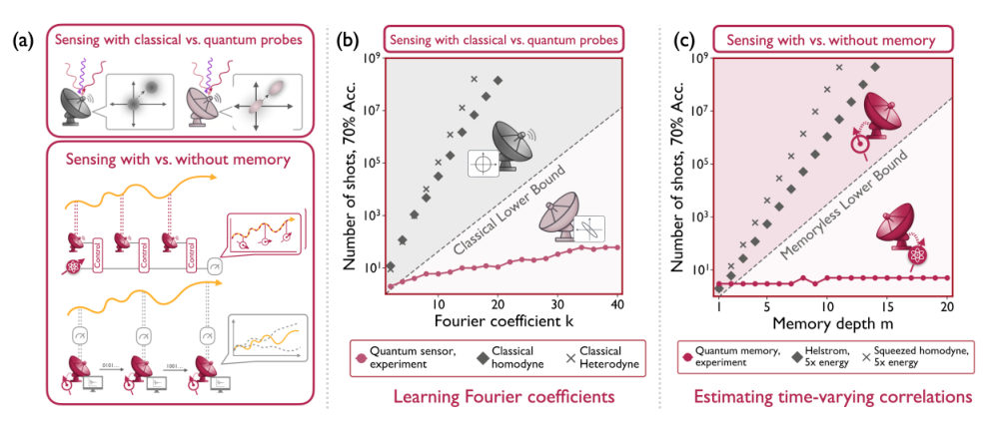
<figcaption class="paper-figure-caption"><b>Fig 3.</b> FIG. 3. Exponential quantum advantages with quantum probes and quantum memory. (a) Top: schematic of sensing with classical vs. conventional Gaussian quantum probes. Classical sensors are modeled as preparing coher- ent probe states, whereas conventional Gaussian sensors can utilize squeezed probes and generaldyne readout. Bottom: schematic of quantum sensing with vs. without quantum memory. A sensor equipped with quantum memory coherently accumulates temporal correlations, whereas a memoryless sensor must measure destructively after each interaction and carry forward only the resulting classical information. (b) Experimental demonstration of separation between conven- tional Gaussian...</figcaption>
</figure>
<figure class="paper-figure-card">
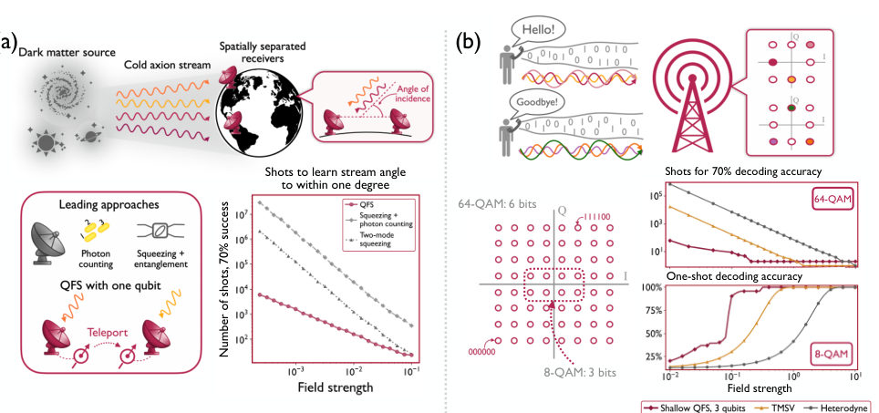
<figcaption class="paper-figure-caption"><b>Fig 4.</b> FIG. 4. Demonstrating speedups in practical applications through numerical simulations. (a) Characterizing cold axion streams. Daily periodicity in the angle of an incident field would constitute smoking-gun evidence of axionic dark matter. This angle manifests as Gaussian covariance between spatially separated receivers. Using estimated velocity parameters of the Sagittarius stream [40], we simulate QFS vs. the leading practical approaches that do not use long- range, long-lived entangled sensors. The QFS protocol only requires a single qubit that is separately coupled to each detector at different times; a realization could use state teleportation of the ancilla, but no...</figcaption>
</figure>
<figure class="paper-figure-card">
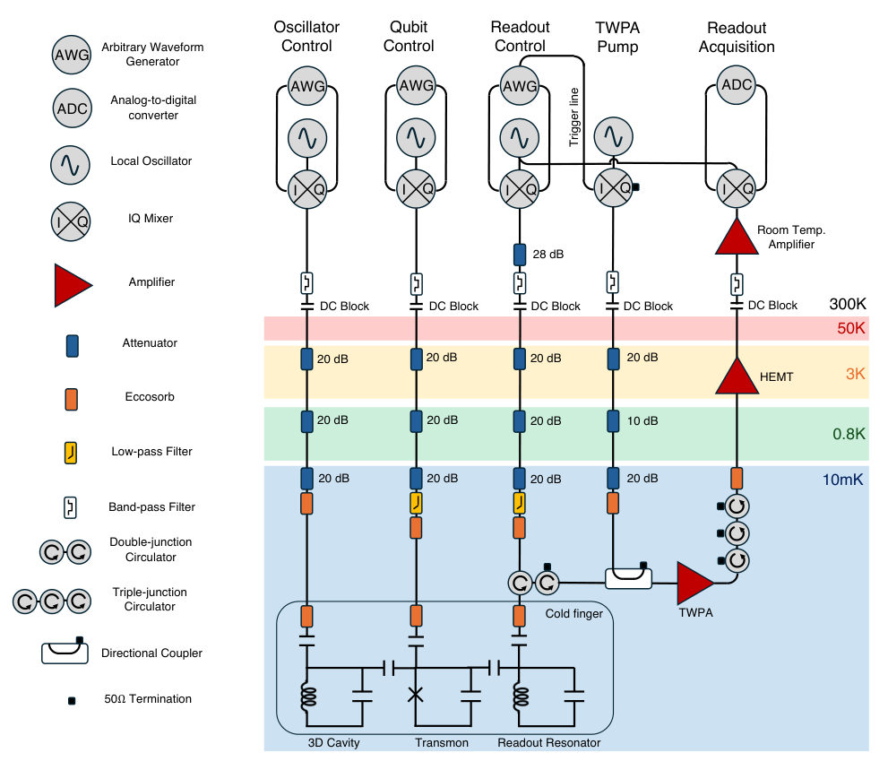
<figcaption class="paper-figure-caption"><b>Fig 5.</b> FIG. 1. Wiring Diagram of the experiment. Experiment setup for microwave hardware and cabling for the device used in this work.</figcaption>
</figure>
</div>

<p><strong>Summary.</strong> This work establishes that coupling a single controllable qubit to a conventional sensor can yield an exponential quantum advantage for learning classical signals. Using the novel QΨ theory, the authors demonstrate this capability experimentally with superconducting qubits, showing massive reductions in measurement requirements for tasks like Fourier analysis and signal correlation estimation.</p>
<p><strong>Why it may be interesting.</strong> It provides a concrete, near-term pathway to quantum advantage by showing that simple systems (single qubit + sensor) can exponentially enhance fundamental signal processing tasks like spectral analysis and time-series learning, which is highly relevant for quantum sensing applications in AMO physics.</p>
<details>
<summary>Detailed structure</summary>
<p><strong>Main problem.</strong> The paper demonstrates an exponential quantum advantage for learning classical signals, such as Fourier coefficients or temporal correlations, by coupling a single controllable qubit to a conventional sensor.</p>
<p><strong>Main result.</strong> Quantum Feature Sensing (QFS) protocols achieve exponential reductions in the required number of measurements compared to classical or standard quantum methods, demonstrated with up to $10^7$-fold improvements experimentally.</p>
<p><strong>Method.</strong> The authors introduce Quantum Phase-Space Inference (QΨ), a unifying theory that derives optimal quantum-enhanced learning algorithms and rigorous lower bounds for sensing tasks.</p>
<p><strong>Model / system.</strong> The primary platform is a superconducting cavity–qubit architecture. The theoretical framework models the signal estimation by characterizing the probability density $P(\alpha)$ in phase space, extending beyond standard quantum Fisher information limits.</p>
<p><strong>Key observables.</strong> Prediction accuracy (e.g., 70% for Fourier-amplitude learning), query complexity ($O(k)$ vs $\exp(\Omega(k))$ queries), and Accessible Feature Information ($   ext{AFI}$).</p>
<p><strong>Important parameters / regimes.</strong> The advantage is shown to hold using only a single ancilla qubit, making it relevant for near-term quantum technology.</p>
<p><strong>Assumptions / limitations.</strong> The protocols are designed to be robust even in the presence of decoherence and noise (Markovian, white, or thermal).</p>
<p><strong>Figures summary.</strong> Figures illustrate the exponential advantage: Fig. 2(c) shows QFS achieving high accuracy with few shots compared to conventional Gaussian approaches; Fig. 4 demonstrates superior performance for sensing dark matter angles and identifying wireless communication symbols.</p>
<p><strong>Paper structure.</strong> The paper builds from a general overview of quantum sensing (Fig. 1), introduces the theoretical framework ($  ext{Q}\Psi$), proves exponential advantages for specific tasks like Fourier coefficient learning (Theorem 1) and temporal correlation estimation using memory (Theorem 3), and concludes with experimental validation on superconducting qubits.</p>
</details>
<details>
<summary>Abstract</summary>
<p>Quantum technology has the potential to transform scientific discovery, but quantum advantages often require processing capabilities well beyond the reach of experimental platforms. We show that coupling a single controllable qubit to an otherwise conventional sensor can exponentially reduce the number of measurements required to learn classical signals. These rigorous quantum advantages apply to fundamental sensing tasks, including learning Fourier coefficients, extracting temporal correlations from time-varying signals, and estimating transformations of physical observables. Using a superconducting cavity--qubit architecture, we experimentally demonstrate $10^7$-fold reductions in the number of measurements required for Fourier-amplitude and time-varying signal learning. Our $\textit{quantum feature sensing}$ algorithms further enable orders-of-magnitude improvements in simulations of weak-signal dark matter detection and wireless communication applications. These quantum advantages are derived from Quantum Phase-Space Inference (Q$Ψ$), a unifying theory of quantum-enhanced experiments that simultaneously converts a set of experimental objectives and constraints into tight lower bounds and optimal quantum-enhanced learning algorithms while producing a certificate of quantum advantage. Q$Ψ$ extends beyond the regimes captured by quantum Fisher information and provides a framework for systematically identifying rigorous quantum advantages in practical experimental tasks. Together, our results establish that near-term quantum technology can exponentially enhance our ability to learn from classical signals.</p>
</details>
<p><sub><a href="#top">↑ back to top</a></sub></p>

<p><a id="paper-2608.13342"></a></p>
<h3 id="quantum-inspired-phase-bicoherence-spectroscopy-a-framework-for-detecting-universal-textural-angular-order-across-multi-modal-complex-datasets"><a href="http://arxiv.org/abs/2608.13342v1">Quantum-Inspired Phase Bicoherence Spectroscopy: A Framework for Detecting Universal Textural Angular Order Across Multi-Modal Complex Datasets</a></h3>
<p><strong>Authors:</strong> Zheng Xing, Chan-Tong Lam, Xiaochen Yuan<br>
<strong>Type:</strong> both · <strong>Category:</strong> other · <strong>PDF:</strong> <a href="https://arxiv.org/pdf/2608.13342v1">https://arxiv.org/pdf/2608.13342v1</a><br>
<strong>Analysis basis:</strong> full PDF text, analyzed in chunks
<strong>Topic relevance:</strong> <code>interference shaping light</code> <strong>3/5</strong> · <code>quantum measurements</code> <strong>2/5</strong> · <code>Keldysh / 2PI / non-Gaussian methods</code> <strong>1/5</strong> · <code>analog quantum simulation</code> <strong>1/5</strong> · <code>correlated / nonlocal dissipation</code> <strong>1/5</strong> · <code>methods for driven-dissipative</code> <strong>1/5</strong></p>
<div class="figure-strip-hint">↔ Scroll figures horizontally</div>
<div class="paper-figures-scroll">
<figure class="paper-figure-card">
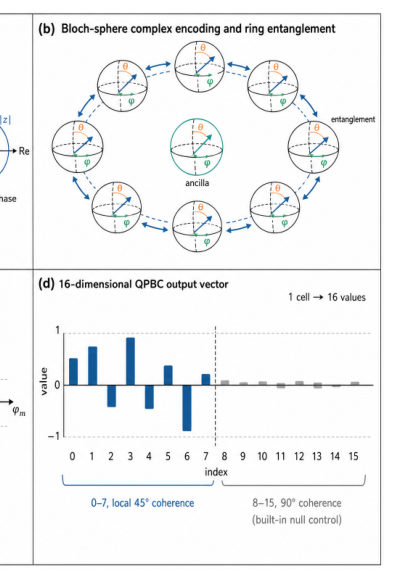
<figcaption class="paper-figure-caption"><b>Fig 1.</b> Fig. 1: Overview of QPBC spectroscopy. (a) Stage 1: Single-cell preprocessing, angular sectorisation into nd = 8 sectors, and extraction of the complex Fourier coef- ficient Fj at the selected spatial frequency (kx, ky). (b) Stage 2: Bloch-sphere complex encoding. Each data qubit qj stores amplitude in the polar angle (θj = πAj) and phase in the azimuthal angle (ϕj). A ring entanglement network (L = 4 layers of CNOT and Rzz gates) delocalises the information across all nine qubits. (c) Stage 3: Three-body bicoherence readout. For each angular triplet (a, b, c), a CRz gate sequence extracts cos(ϕa + ϕc −2ϕb) via ancilla interferometry. (d) The 16-dimensional QPBC vector: step-d = 1 triplets...</figcaption>
</figure>
<figure class="paper-figure-card">
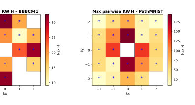
<figcaption class="paper-figure-caption"><b>Fig 2.</b> Fig. 2: Cross-dataset frequency-sweep heatmaps. Colour encodes the maximum pairwise Kruskal–Wallis H statistic at each frequency (kx, ky) for (a) BBBC021, (b) BBBC041, and (c) PathMNIST. In all three datasets, the dominant frequencies lie on the kx = 0 axis, with (0, ±1) consistently among the top candidates. All three panels exhibit central inversion symmetry about the origin, f(kx, ky) ≈f(−kx, −ky), a direct consequence of F(−k) = F ∗(k) for real-valued images. This leaves the bicoherence invariant under k →−k, providing an internal validation of the method’s physical correctness. PathMNIST shows the most uniform colour-block matching across the origin. Stars mark frequencies with at...</figcaption>
</figure>
<figure class="paper-figure-card">
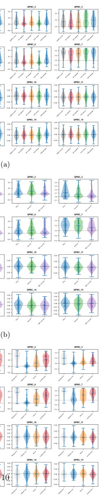
<figcaption class="paper-figure-caption"><b>Fig 3.</b> Fig. 3: QPBC distributions at the optimal frequency (0, 1). Violin plots of the 16 QPBC dimensions across biological classes for (a) BBBC021, (b) BBBC041, and (c) PathMNIST. Step-d = 1 dimensions (0–7) show significant non-zero values in control populations (H1 confirmed); step-d = 2 dimensions (8–15) are tightly centred at zero (H2 confirmed). The responsive dimensions differ across datasets, reflecting their distinct angular texture architectures.</figcaption>
</figure>
<figure class="paper-figure-card">
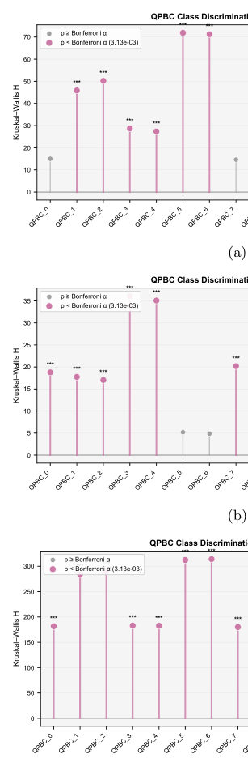
<figcaption class="paper-figure-caption"><b>Fig 4.</b> Fig. 4: Kruskal–Wallis H spectra at the optimal frequency (0, 1). (a) BBBC021: 7/16 dimensions significant (green), strongest H=72.1 (p = 8.3 × 10−15). (b) BBBC041: 7/16 dimensions significant, strongest H=36.1 (p = 1.5 × 10−8). (c) PathMNIST: 8/16 dimensions significant, strongest H=314.1 (p = 8.7 × 10−68). Grey bars: non-significant. Significance threshold: Bonferroni-corrected α = 0.05/16 = 3.125 × 10−3.</figcaption>
</figure>
<figure class="paper-figure-card">
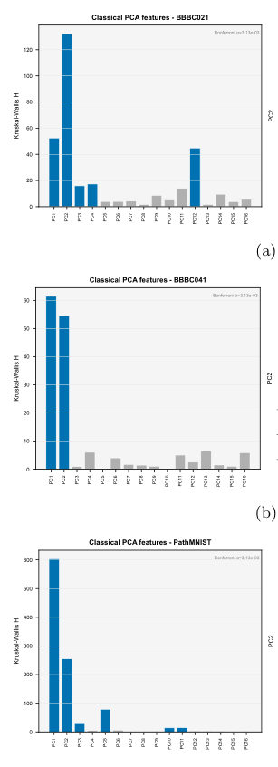
<figcaption class="paper-figure-caption"><b>Fig 5.</b> Fig. 5: Classical baseline fails to achieve meaningful class separation across all three datasets. PCA projections of the 16-dimensional classical features (mean intensity + LBP histogram per angular sector) for (a) BBBC021 (five drug classes), (b) BBBC041 (three malaria stages), and (c) PathMNIST (four tissue types). In all cases, the class distributions exhibit extensive overlap with no clear cluster boundaries. On BBBC041, the three classes collapse into a single cluster (Mahalanobis distances &lt; 1). On PathMNIST, the Background class (grey) separates from the tissue classes due to the extreme textural contrast of near-empty fields, but the pathologically relevant dis- tinctions among...</figcaption>
</figure>
</div>

<p><strong>Summary.</strong> This paper introduces Quantum Phase Bicoherence (QPBC) spectroscopy, a novel quantum-inspired technique designed to measure orientation order in complex images by probing gauge-invariant phase relationships. By encoding image sectors into an entangled qubit state and measuring three-body bicoherence, the method generates a robust descriptor that outperforms classical statistics for classifying biological textures across multiple modalities.</p>
<p><strong>Why it may be interesting.</strong> While applied to biology, the core technique relies on simulating complex quantum interference measurements (bicoherence) to extract robust phase information that is fundamentally inaccessible classically. This methodology of mapping classical physical constraints onto quantum observables is highly relevant for developing new measurement protocols in AMO physics.</p>
<details>
<summary>Detailed structure</summary>
<p><strong>Main problem.</strong> Classical image analysis fails to capture structurally meaningful, gauge-invariant orientation signatures encoded in Fourier phase due to local cellular rotations.</p>
<p><strong>Main result.</strong> The proposed Quantum Phase Bicoherence (QPBC) spectroscopy successfully resolves angular-phase order and discriminates distinct biological phenotypes across multiple multi-modal datasets with high statistical significance.</p>
<p><strong>Method.</strong> It introduces a quantum-interferometric framework that embeds image angular sectors into an entangled qubit state to probe three-body bicoherence, yielding a 16-dimensional descriptor vector.</p>
<p><strong>Model / system.</strong> The analysis is applied to multi-modal microscopic imaging datasets (fluorescence, bright-field, histopathology) containing biological textures exhibiting directional order. The method simulates quantum interference on an abstract qubit register representing angular sectors.</p>
<p><strong>Key observables.</strong> The 16-dimensional QPBC vector ($  ext{f}_{    ext{QPBC}}$), which measures gauge-invariant angular phase coupling via three-body bicoherence $\cos(\phi_a + \phi_c -2\phi_b)$.</p>
<p><strong>Important parameters / regimes.</strong> Optimal probing frequency convergence to $(0, 1)$ after principal-axis alignment; the number of sectors ($n_d=8$).</p>
<p><strong>Assumptions / limitations.</strong> The primary assumption is that quantum interference mechanisms can support invariant nonlinear phase composition where classical real-valued pipelines fail.</p>
<p><strong>Figures summary.</strong> Figures schematically illustrate the four stages: Sectorisation $
ightarrow$ Quantum Encoding $
ightarrow$ Three-body Bicoherence Measurement $
ightarrow$ Final Vector Output, demonstrating the process flow.</p>
<p><strong>Paper structure.</strong> The paper follows a structure detailing the scientific limitation (classical phase loss), introducing QPBC as the solution, describing the multi-stage quantum simulation methodology, validating it across three diverse datasets using rigorous statistical testing, and concluding with its utility in establishing 'quantum morphometry'.</p>
</details>
<details>
<summary>Abstract</summary>
<p>Classical image analysis routinely discards structurally meaningful orientation signatures encoded within Fourier phase, which are easily corrupted by local cellular rotation. Although quantum-inspired data processing offers new avenues for complex signal characterization, practical tools for directly extracting gauge-invariant angular correlations without explicit phase reconstruction remain scarce. Here we introduce Quantum Phase Bicoherence (QPBC) spectroscopy, a novel quantum-interferometric framework for capturing gauge-invariant angular order. The method embeds image angular sectors into a nine-qubit entangled state and probes three-body bicoherence via an ancilla, yielding 16 interpretable readout channels. We validate our framework on three independent public multi-modal imaging datasets covering fluorescence (BBBC021), bright-field (BBBC041) and histopathology (PathMNIST). QPBC consistently resolves angular-phase order and discriminates distinct biological phenotypes with high statistical significance. After principal-axis alignment, the optimal probing frequency universally converges, driven by Fourier directional sensitivity; negative-control experiments fully eliminate discriminative capacity, demonstrating frequency tuning acts as an on-off switch. Cross-dataset benchmarks confirm QPBC outperforms conventional Fourier-phase statistics, where inherent inversion symmetry serves as a built-in pipeline self-check. QPBC delivers a universal, classically unachievable quantitative texture observable, establishes interpretable quantum morphometry, and broadens the toolbox for quantum-inspired analysis applicable to diverse multi-modal microscopic measurements.</p>
</details>
<p><sub><a href="#top">↑ back to top</a></sub></p>

<p><a id="paper-2608.13500"></a></p>
<h3 id="symmetry-emergence-in-self-organized-criticality"><a href="http://arxiv.org/abs/2608.13500v1">Symmetry Emergence in Self-Organized Criticality</a></h3>
<p><strong>Authors:</strong> Ernesto Lupercio, Mikhail Shkolnikov<br>
<strong>Type:</strong> theory · <strong>Category:</strong> statistical mechanics · <strong>PDF:</strong> <a href="https://arxiv.org/pdf/2608.13500v1">https://arxiv.org/pdf/2608.13500v1</a><br>
<strong>Analysis basis:</strong> full PDF text, analyzed in chunks
<strong>Topic relevance:</strong> <code>non-equilibrium universality</code> <strong>3/5</strong> · <code>driven-dissipative phase transition</code> <strong>2/5</strong> · <code>Keldysh / 2PI / non-Gaussian methods</code> <strong>1/5</strong> · <code>analog quantum simulation</code> <strong>1/5</strong> · <code>correlated / nonlocal dissipation</code> <strong>1/5</strong> · <code>scars &amp; prethermalization</code> <strong>1/5</strong></p>
<div class="figure-strip-hint">↔ Scroll figures horizontally</div>
<div class="paper-figures-scroll">
<figure class="paper-figure-card">
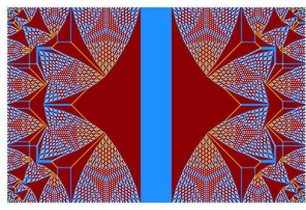
<figcaption class="paper-figure-caption"><b>Fig 1.</b> FIG. 1. Restoration of the first image of the neutral element of the sandpile group on 288x188 lattice rectangle produced by Michael Creutz [5], in the original color scheme: white, gold, dodgerblue and darkred mean 0,1,2 and 3, respectively. Reproduced by Higinio Serrano.</figcaption>
</figure>
<figure class="paper-figure-card">
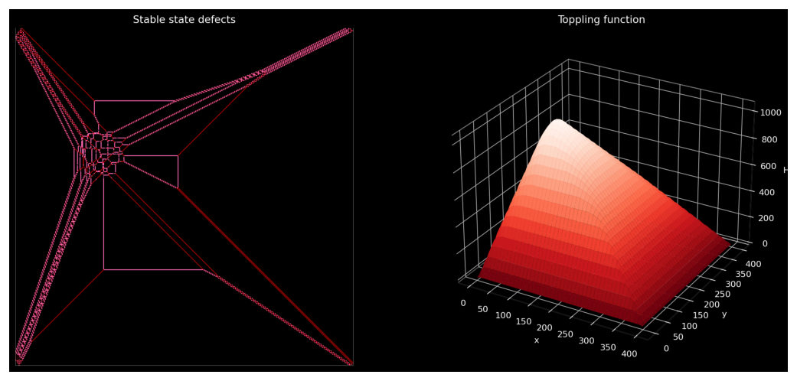
<figcaption class="paper-figure-caption"><b>Fig 2.</b> FIG. 2. A perturbation by a localized cloud. Observe that the plot on the right is near-conical over the center of the perturbation, and the corresponding set of defects on the left has almost no vertices outside the perturbation cloud.</figcaption>
</figure>
</div>

<p><strong>Summary.</strong> This work rigorously analyzes how symmetries emerge in Self-Organized Criticality models by examining different spatial and temporal scales. It establishes a profound connection between the sandpile model's relaxation process and solutions to the Monge-Ampère equation from optimal transport theory. This provides a powerful mathematical framework for understanding symmetry emergence in complex, non-equilibrium physical systems.</p>
<p><strong>Why it may be interesting.</strong> While focused on classical SOC, the deep connection established between critical phenomena and advanced PDEs like the Monge-Ampère equation provides powerful mathematical machinery applicable to non-equilibrium quantum systems or complex many-body dynamics where symmetry breaking is key.</p>
<details>
<summary>Detailed structure</summary>
<p><strong>Main problem.</strong> The paper investigates the emergence of affine symmetry in Self-Organized Criticality (SOC) models, particularly when analyzed across different mathematical scales.</p>
<p><strong>Main result.</strong> The scaling limit of the toppling function is shown to be a unique concave solution to the Monge-Ampère equation, linking SOC dynamics to optimal transport theory and differential geometry.</p>
<p><strong>Method.</strong> The analysis employs rigorous mathematical tools including scaling limits, tropical geometry, and solving non-linear partial differential equations like the Monge-Ampère equation.</p>
<p><strong>Model / system.</strong> The system is based on a prototypical Abelian sandpile model defined on a compact convex domain in $\mathbb{R}^2$. The analysis compares micro (Abelian), meso (Tropical), and macro scales of this critical process.</p>
<p><strong>Key observables.</strong> The toppling function (odometer) and the deviation of density from its maximal value are key observables, which converge to solutions of the Monge-Ampère equation.</p>
<p><strong>Important parameters / regimes.</strong> The analysis focuses on the regime where the inverse square of the lattice mesh ($1/h^2$) is much larger than the number of random perturbation points.</p>
<p><strong>Assumptions / limitations.</strong> The results rely on specific scaling limits and assumptions regarding the relative sizes of lattice discretization versus external perturbations in the maximal density regime.</p>
<p><strong>Figures summary.</strong> Figure 1 illustrates scale invariance by showing the restoration of the neutral element of the sandpile group. Figure 2 compares defect structures resulting from localized vs. uniform perturbations.</p>
<p><strong>Paper structure.</strong> The paper progresses by establishing a mathematical hierarchy: first analyzing microscale Abelian dynamics, then bridging to mesoscale tropical models via scaling limits, and finally characterizing the macroscale limit using solutions to the Monge-Ampère equation.</p>
</details>
<details>
<summary>Abstract</summary>
<p>We describe a mechanism of affine symmetry emergence in the maximal density regime of the prototypical model of self-organized criticality when the inverse square of the mesh of the underlying lattice is much larger than the number of random perturbation points distributed according to a prescribed probability measure supported in the interior of the ambient convex domain. Moreover, an appropriate scaling limit of the toppling function (aka odometer), which counts the number of operations per site, is a solution to a non-linear partial differential equation well known in the context of optimal transport and differential geometry, making it possible to accurately estimate the deviation of the density from its maximal value in any macroscopic window. The mechanism for the affine symmetry emergence is due to the novel empirical fact, supported in addition by inductive arguments that have recently being upgraded to a rigorous proof, that the scaling limit of the toppling function is the unique concave solution of the Monge-Ampère equation with Dirichlet boundary condition on the convex domain with the potential given by the probability measure used above as the infinite-perturbation profile.</p>
</details>
<p><sub><a href="#top">↑ back to top</a></sub></p>

<p><a id="paper-2608.13238"></a></p>
<h3 id="emergent-symmetry-protected-topological-phases-via-polyakov-confinement-in-quantum-spin-systems"><a href="http://arxiv.org/abs/2608.13238v1">Emergent Symmetry-Protected Topological Phases via Polyakov Confinement in Quantum Spin Systems</a></h3>
<p><strong>Authors:</strong> Li-Wei He, Shun-Li Yu, Jian-Xin Li<br>
<strong>Type:</strong> theory · <strong>Category:</strong> strongly correlated electrons · <strong>PDF:</strong> <a href="https://arxiv.org/pdf/2608.13238v1">https://arxiv.org/pdf/2608.13238v1</a><br>
<strong>Analysis basis:</strong> full PDF text, analyzed in chunks
<strong>Topic relevance:</strong> <code>Keldysh / 2PI / non-Gaussian methods</code> <strong>3/5</strong> · <code>analog quantum simulation</code> <strong>3/5</strong> · <code>quantum measurements</code> <strong>1/5</strong></p>
<div class="figure-strip-hint">↔ Scroll figures horizontally</div>
<div class="paper-figures-scroll">
<figure class="paper-figure-card">
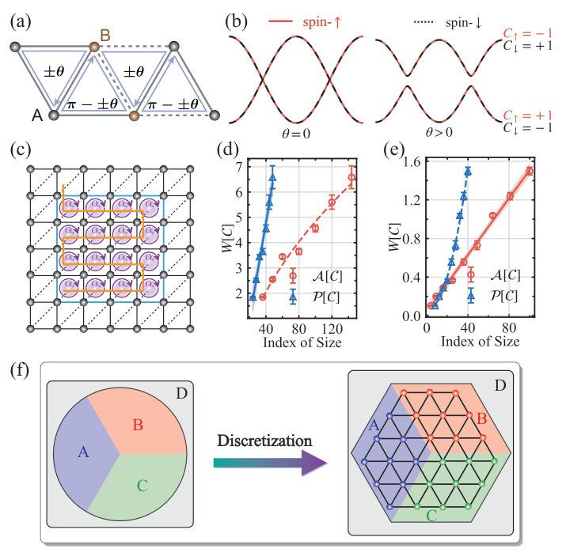
<figcaption class="paper-figure-caption"><b>Fig 1.</b> Figure 1. (a) The details of mean-field Ans¨atz, where the flux through down-pointing (up-pointing) triangles is ±θ (π ± θ). The sign “±” indicates that spinons with opposite spins couple to opposite gauge fluxes: eiθσc† i,σcj,σ on the NN bond ⟨ij⟩, with θ↑(↓) = +(−)θ/3 as the Peierls phase. This reduces to a DSL , depicted by the solid orange line in the phase diagram in Fig. 2, when the gauge flux θ = 0. A finite θ &gt; 0 opens gaps at Dirac cones, resulting in a topologically nontrivial Chern number C↑,↓= ±1. The mean-field dispersion for two spin flavors in these cases is shown in (b). (c), Schematic illustration of flux insertion by a string operator, represented by the solid orange line...</figcaption>
</figure>
<figure class="paper-figure-card">
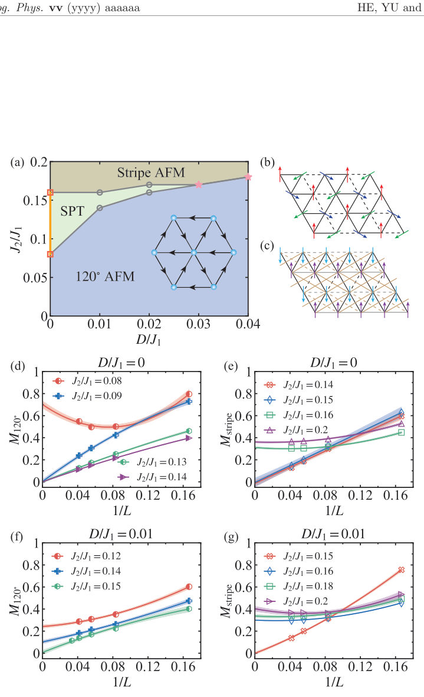
<figcaption class="paper-figure-caption"><b>Fig 2.</b> Figure 2. (a) Phase diagram of the J1-J2 antiferromagnetic model with DM interaction on a triangular lattice. The inset illustrates the pattern of the DM interaction, where the vector D indicates the spin direction along the +z-axis. (b) and (c), The mean-field Ans¨atze of the 120◦and strip antiferromagnetic orders, respectively. Different spinon hopping terms are highlighted in various colors, with dashed lines indicating terms that include an additional negative sign. The optimized variational magnetic moments M for the 120◦[(d) and (f)] and stripe [(e) and (g)] orders are shown as a function of 1/L (where the system size is L × L) for different DM and J2 spin interactions. The solid...</figcaption>
</figure>
<figure class="paper-figure-card">
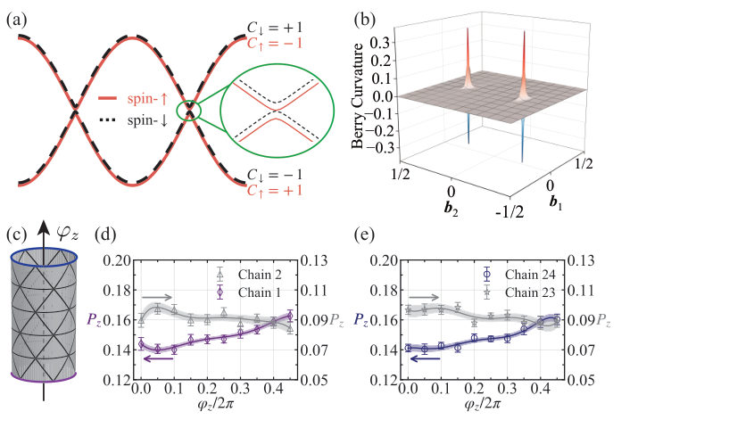
<figcaption class="paper-figure-caption"><b>Fig 3.</b> Figure 3. (a) Mean-field spinon dispersion for total magnetization Sz tot = 2. The spin-↓valence band and spin-↑ conduction band intersect at momenta ±b2/4. (b) Berry curvature distributions for the spin-↑valence band (positive Berry curvature) and conduction band (negative Berry curvature). The different sign between spin-↑and spin-↓ spinon bands are due to time-reversal symmetry. (c) Schematic of a triangular lattice with cylindrical geometry. φz represents the twist gauge flux. (d) and (e) The spin polarization Pz near the bottom (Chain 1 and Chain 2) and top (Chain 23 and Chain 24) edges as a function of φz, respectively, with total magnetization Sz tot = 2. The system size in a and b...</figcaption>
</figure>
</div>

<p><strong>Summary.</strong> This work shows that the confinement of fractionalized excitations, modeled after Polyakov's mechanism in gauge theory, can drive a Dirac Spin Liquid into a robust Symmetry-Protected Topological (SPT) phase. By analyzing lattice models and using diagnostics like Wilson loops, the authors confirm this transition while simultaneously revealing protected edge physics via spin pump measurements.</p>
<p><strong>Why it may be interesting.</strong> It provides a concrete mechanism—gauge field dynamics—for realizing topological order in strongly correlated magnets, linking gauge theory concepts directly to observable condensed matter phenomena like spin-Hall effects.</p>
<details>
<summary>Detailed structure</summary>
<p><strong>Main problem.</strong> The core challenge is understanding how exotic, fractionalized excitations emerging from quantum spin systems reconfine into stable Symmetry-Protected Topological (SPT) phases.</p>
<p><strong>Main result.</strong> The authors demonstrate that Polyakov's confinement mechanism can dynamically transform a Dirac Spin Liquid into an SPT state by confining bulk spinons while preserving gapless edge modes.</p>
<p><strong>Method.</strong> The analysis combines field theory techniques, including mean-field approximations and Hubbard-Stratonovich transformations to derive dual Lagrangians, with numerical diagnostics like Wilson loop calculations and entanglement entropy.</p>
<p><strong>Model / system.</strong> The study uses quantum spin systems on a triangular lattice, starting from a Dirac Spin Liquid (DSL) model involving coupled spinons and an emergent U(1) gauge field. The Hamiltonian includes Heisenberg, $J_2$, and Dzyaloshinskii-Moriya interactions.</p>
<p><strong>Key observables.</strong> Wilson loop expectation value $\langle W[C] 
angle$ (diagnosing confinement), Topological Entanglement Entropy ($\gamma$), and the spin-pump response encoding Berry curvature.</p>
<p><strong>Important parameters / regimes.</strong> The ratio $J_2/J_1$, the DM interaction strength $D$, and the magnetic flux threading $\phi_z$.</p>
<p><strong>Assumptions / limitations.</strong> The analysis relies on projecting the theory via a Gutzwiller operator to enforce single-occupancy constraints, leading to compact gauge fields.</p>
<p><strong>Figures summary.</strong> Figures illustrate the mean-field Ansatz, flux insertion effects, and calculations comparing Wilson loop scaling for DSL vs. SPT states, alongside Berry curvature distributions from spin pump measurements.</p>
<p><strong>Paper structure.</strong> The paper progresses by first establishing the theoretical framework (DSL $    o$ Chern-Simons theory), then applying confinement diagnostics (Wilson loops/TEE) to identify the transition to an SPT state, and finally probing the protected edge physics using magnetic field response (spin pump).</p>
</details>
<details>
<summary>Abstract</summary>
<p>A main theme in modern condensed matter physics is the emergence of fractionalized excitations and gauge structures from quantum spin systems. However, understanding how these exotic degrees of freedom reconfine into new phases of matter remains a fundamental challenge. In this work, we demonstrate that Polyakov's confinement mechanism-a foundation of compact gauge theory-can serve as a dynamical engine to transform a Dirac spin liquid into a symmetry-protected topological (SPT) state. Starting with a Dirac spin liquid with spin-dependent gauge fluxes, we show that the single-occupancy constraint inherent to the physical Hilbert space triggers monopole condensation, dynamically confining bulk spinons while preserving gapless edge modes-realizing a spinon analog of the quantum spin Hall effect. Using a large-scale variational Monte Carlo simulation on a triangular antiferromagnet with an additional Dzyaloshinskii-Moriya interaction, we provide microscopic evidence for this confined SPT phase, including a characteristic area law for the Wilson loop and vanishing topological entanglement entropy. Furthermore, we identify a measurable spin-pump response under magnetic fields, which directly encodes the Berry curvature of the parent Dirac cones. Our results reveal a previously unexplored pathway to SPT physics, bridging the fields of gauge theory, quantum magnetism, and topological matter.</p>
</details>
<p><sub><a href="#top">↑ back to top</a></sub></p>

<p><a id="paper-2608.13123"></a></p>
<h3 id="using-diffusion-models-to-estimate-uncertainties-in-analytic-continuation"><a href="http://arxiv.org/abs/2608.13123v1">Using Diffusion Models to Estimate Uncertainties in Analytic Continuation</a></h3>
<p><strong>Authors:</strong> Sagi Meir, Daniel Freedman, Barak Hirshberg<br>
<strong>Type:</strong> theory · <strong>Category:</strong> statistical mechanics · <strong>PDF:</strong> <a href="https://arxiv.org/pdf/2608.13123v1">https://arxiv.org/pdf/2608.13123v1</a><br>
<strong>Analysis basis:</strong> full PDF text, analyzed in chunks
<strong>Topic relevance:</strong> <code>Keldysh / 2PI / non-Gaussian methods</code> <strong>3/5</strong> · <code>methods for driven-dissipative</code> <strong>3/5</strong> · <code>quantum measurements</code> <strong>1/5</strong></p>
<div class="figure-strip-hint">↔ Scroll figures horizontally</div>
<div class="paper-figures-scroll">
<figure class="paper-figure-card">
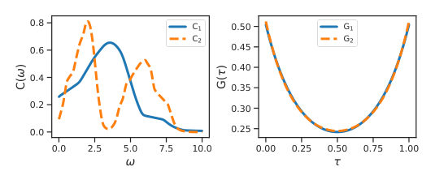
<figcaption class="paper-figure-caption"><b>Fig 1.</b> Figure 1. Demonstration of the ill-posedness of equation (1). Left panel: Two synthetic spectra, C1 (blue) and C2 (orange), with clearly distinct features. Right panel: The corresponding iTCFs, G1 and G2, which are nearly indistinguishable.</figcaption>
</figure>
<figure class="paper-figure-card">
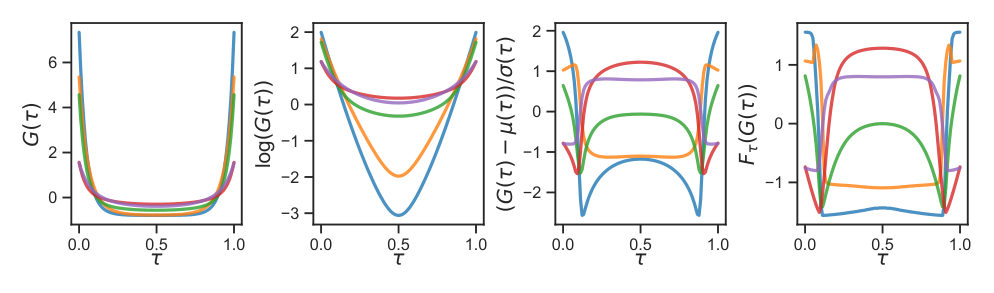
<figcaption class="paper-figure-caption"><b>Fig 2.</b> Figure 2. The four-channel representation of the iTCFs used for model conditioning. To provide a richer representation of the input signal and expose hidden structural features, the original iTCF is transformed into four complementary channels. The different colors represent a selection of sample iTCFs from the dataset. From left to right: The raw iTCF G(τ), which often compresses distinct spectral features into visually similar curves. The logarithmic transformation log(G(τ)), which enhances the visibility of low-amplitude structure, particularly near τ = 0.5. The pointwise normalized signal (G(τ) −µ(τ))/σ(τ), computed using the pointwise training-set mean and mean absolute deviation,...</figcaption>
</figure>
<figure class="paper-figure-card">
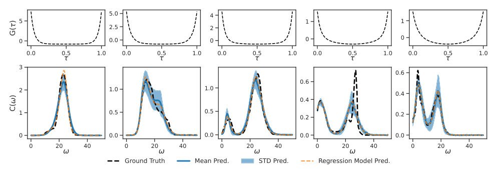
<figcaption class="paper-figure-caption"><b>Fig 3.</b> Figure 3. Comparison of analytic continuation using regression and diffusion models across representative synthetic examples. Top row: Ground-truth iTCFs obtained via equation (1) from the generated synthetic spectra. Bottom row: Ground-truth spectra (dashed black) compared against reconstructed spectral functions. The solid blue line and shaded light blue area are the mean and standard deviation of 1000 realizations of the diffusion model. The prediction of the baseline regression model is shown in dashed orange.</figcaption>
</figure>
<figure class="paper-figure-card">
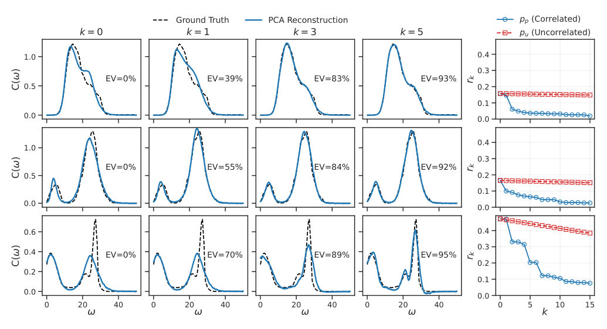
<figcaption class="paper-figure-caption"><b>Fig 4.</b> Figure 4. Step-by-step visualization of the PCA reconstruction for the correlated model (pp). The rightmost column shows the parsimony analysis for both the correlated and uncorrelated models. Rows are three representative synthetic examples; columns show the number of principal components k increasing from 0 to 5. Ground-truth spectra C(ω) (dashed black lines) are compared against the PCA reconstructions ˆCk(ω) (solid blue lines). Annotations within each panel denote the cumulative explained variance (EV). The progression confirms the rapid convergence of the correlated model, with accurate reconstructions by k = 3 to k = 5. Rightmost column: Parsimony analysis evaluating the efficiency of...</figcaption>
</figure>
<figure class="paper-figure-card">
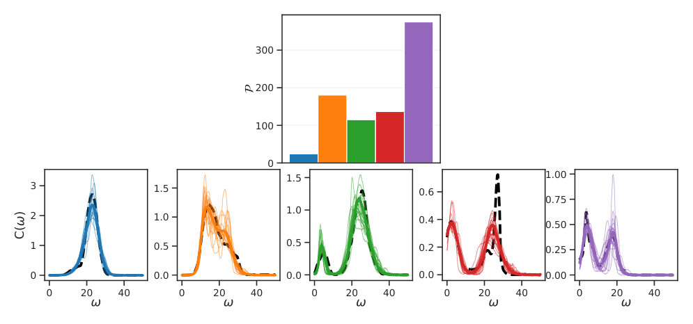
<figcaption class="paper-figure-caption"><b>Fig 5.</b> Figure 5. Quantitative analysis of inversion ambiguity for the representative synthetic examples shown in figure 3. Top: A bar chart displaying the computed UPV, P, for each case. Bottom: A visual legend linking the colors in the bar chart to their respective spectral shapes, displaying the corresponding ground-truth (dashed black) and mean reconstructed (solid thick colored lines) spectra, C(ω), and thin lines represent twenty different realizations with the diffusion model. The UPV serves as a reliable diagnostic for the intrinsic difficulty of the inversion: straightforward reconstructions (e.g., the single peak in blue) yield a low UPV, reflecting a tightly constrained solution space....</figcaption>
</figure>
</div>

<p><strong>Summary.</strong> The paper addresses the challenge of analytically continuing imaginary-time correlation functions (iTCFs) to real frequencies, an inherently ill-posed problem. By employing a diffusion model framework, the authors move beyond simple regression to learn the entire probability distribution of possible spectra consistent with the input iTCF. This allows for rigorous quantification of uncertainty and assessment of the physical ambiguity in the measurement.</p>
<p><strong>Why it may be interesting.</strong> This work provides a powerful, theoretically grounded tool for analyzing spectral data in quantum many-body physics by moving beyond single-point estimates to quantify inherent physical uncertainties arising from ill-posed inverse problems.</p>
<details>
<summary>Detailed structure</summary>
<p><strong>Main problem.</strong> The core problem is the ill-posed analytic continuation of imaginary-time correlation functions (iTCFs) to estimate real-frequency power spectra.</p>
<p><strong>Main result.</strong> The authors introduce a diffusion-based generative framework that models the full probability distribution of plausible spectra, allowing for direct quantification of uncertainty and assessment of inversion hardness via an 'uncertainty pseudo-volume.'</p>
<p><strong>Method.</strong> They adapt conditional diffusion models (like DiT) to learn $P(C(\omega)|G(	au))$, treating the continuation as a generative sampling task rather than a single regression point estimate.</p>
<p><strong>Model / system.</strong> The methodology is applied to iTCFs derived from path-integral molecular dynamics simulations, exemplified by liquid parahydrogen. The underlying physics involves relating imaginary-time correlation functions $G(	au)$ to the real-frequency power spectrum $C(\omega)$.</p>
<p><strong>Key observables.</strong> Self-diffusion coefficient (with error bar), reconstructed power spectra $C(\omega)$, and the uncertainty pseudo-volume.</p>
<p><strong>Important parameters / regimes.</strong> Imaginary time $    au \in [0, eta\hbar]$, diffusion time steps ($N=40$), and the conditioning input channels (raw iTCF, log(iTCF), normalized signal, histogram equalization).</p>
<p><strong>Assumptions / limitations.</strong> The primary assumption is that the true solution space of compatible spectra can be accurately modeled by a continuous probability distribution learned via diffusion processes.</p>
<p><strong>Figures summary.</strong> Figure 1 illustrates the non-uniqueness of the inverse Laplace transform using synthetic data. Figure S1 shows Principal Components (PCs) derived from an ensemble, quantifying the variance explained by successive components.</p>
<p><strong>Paper structure.</strong> The paper first establishes the ill-posed nature of iTCF continuation. It critiques existing NN regression methods for ignoring solution uncertainty. The core contribution is presenting and detailing the diffusion model framework, including its conditional training objective, advanced sampling techniques (DPM-Solver++), and multi-channel input representation.</p>
</details>
<details>
<summary>Abstract</summary>
<p>Inverse problems are ubiquitous in physics, chemistry, and engineering, arising when reconstructing hidden quantities from indirect measurements. A key example is the analytic continuation of imaginary-time correlation functions (iTCFs) to the real-frequency domain. This process requires an inverse Laplace transform, which is inherently ill-posed and highly sensitive to small input variations. Recent neural network (NN)-based methods have shown promising results by learning mappings from imaginary-time to real-frequency spectra, often outperforming traditional techniques such as maximum entropy. However, because the problem is ill-posed, many spectra fit the same iTCF. Regression-based approaches output a single solution, which approximates an average over the true solution space, and therefore fail to capture the full distribution of plausible power spectra. To address this issue, we introduce a diffusion-based framework for analytic continuation that learns the distribution of spectra consistent with a given iTCF. It offers two key advantages. First, it quantifies uncertainty directly from the learned distribution. Second, by analyzing the spread and structure of this distribution, we can quantitatively assess the intrinsic hardness of each inversion problem. We measure this hardness with a new metric, the uncertainty pseudo-volume. Applying the framework to an iTCF from a path-integral molecular dynamics simulation of liquid parahydrogen, we obtain the self-diffusion coefficient with an error bar and flag a secondary high-frequency peak as a possible spurious artifact. In contrast to previous attempts at uncertainty quantification, our generative approach rests on a concrete probabilistic basis, providing a more theoretically grounded measure of confidence in the reconstructed power spectra.</p>
</details>
<p><sub><a href="#top">↑ back to top</a></sub></p>

<p><a id="paper-2608.12965"></a></p>
<h3 id="geometry-versus-excitation-sector-in-the-decoherence-of-asymmetric-math435math-qubit-math436math-states"><a href="http://arxiv.org/abs/2608.12965v1">Geometry versus excitation sector in the decoherence of asymmetric $N$-qubit $W$ states</a></h3>
<p><strong>Authors:</strong> Sougata Bhattacharyya, Sovik Roy, Fatih Ozaydin<br>
<strong>Type:</strong> theory · <strong>Category:</strong> quantum information and computing · <strong>PDF:</strong> <a href="https://arxiv.org/pdf/2608.12965v1">https://arxiv.org/pdf/2608.12965v1</a><br>
<strong>Analysis basis:</strong> full PDF text, analyzed in chunks
<strong>Topic relevance:</strong> <code>correlated / nonlocal dissipation</code> <strong>3/5</strong> · <code>driven-dissipative phase transition</code> <strong>1/5</strong> · <code>methods for driven-dissipative</code> <strong>1/5</strong> · <code>non-equilibrium universality</code> <strong>1/5</strong></p>
<div class="figure-strip-hint">↔ Scroll figures horizontally</div>
<div class="paper-figures-scroll">
<figure class="paper-figure-card">
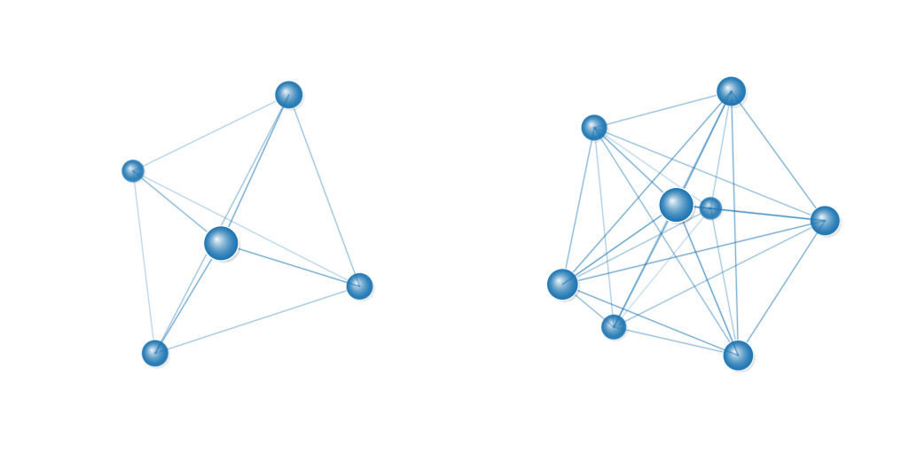
<figcaption class="paper-figure-caption"><b>Fig 1.</b> Figure 1. Equilateral entanglement-network geometry of symmetric |W⟩states for N = 5 (left) and N = 8 (right). Every pair carries concurrence 2/N, illustrating that all qubits play structurally identical roles with no distinguished node.</figcaption>
</figure>
<figure class="paper-figure-card">
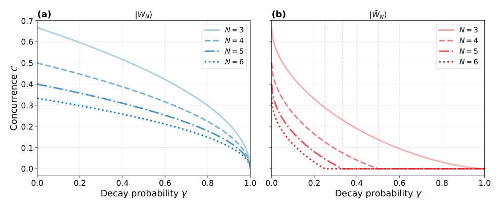
<figcaption class="paper-figure-caption"><b>Fig 2.</b> Figure 2. AD concurrence. Left: |WN⟩decays without ESD. Right: W N undergoes ESD at γ∗= 1/(N −2) for N ≥4; at N = 3, concurrence vanishes only at the boundary γ = 1, so no ESD occurs.</figcaption>
</figure>
<figure class="paper-figure-card">
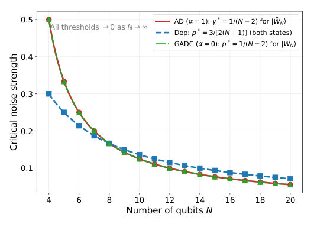
<figcaption class="paper-figure-caption"><b>Fig 3.</b> Figure 3. ESD thresholds for the symmetric family under AD and DP. The AD threshold is γ∗= 1/(N −2) for N ≥4, while the DP threshold is p∗= 3/[2(N +1)]; both vanish as N →∞.</figcaption>
</figure>
<figure class="paper-figure-card">
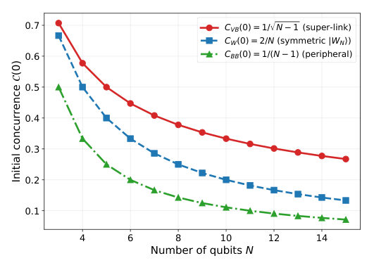
<figcaption class="paper-figure-caption"><b>Fig 4.</b> Figure 4. Initial pairwise concurrence versus N for the VB and BB pair classes and the symmetric reference. The hierarchy CV B &gt; CW &gt; CBB holds for all N ≥3.</figcaption>
</figure>
<figure class="paper-figure-card">
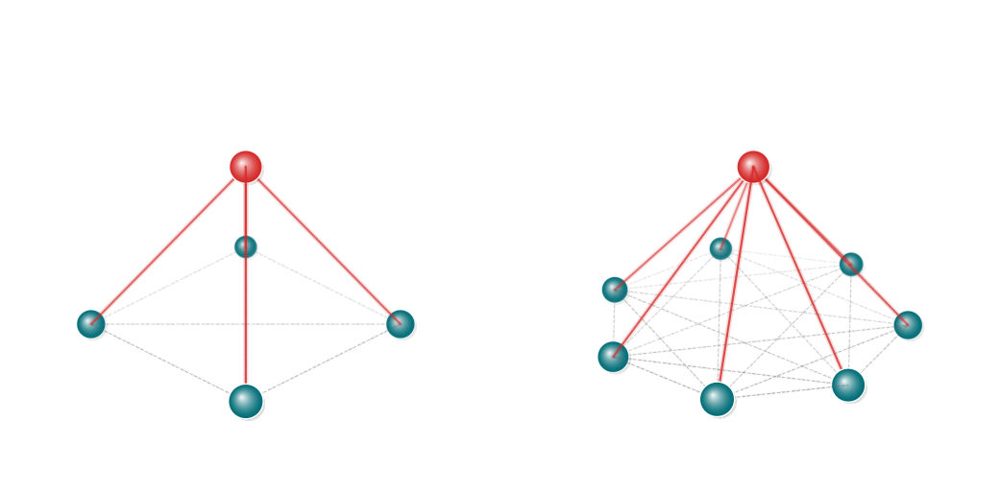
<figcaption class="paper-figure-caption"><b>Fig 5.</b> Figure 5. Entanglement-network geometry of the generalized asymmetric W L N state for N = 5 (left) and N = 8 (right). The distinguished vertex qubit is connected to each base qubit by a higher-concurrence VB link (CV B = 1/ √</figcaption>
</figure>
</div>

<p><strong>Summary.</strong> This paper analyzes the decoherence of asymmetric N-qubit W states by separating the effects of network geometry from the excitation sector. Using closed-form concurrence dynamics under various noise models, the authors show that different pair classes exhibit distinct vulnerabilities to noise. The work establishes that entanglement robustness is governed by three independent factors: geometry, excitation sector, and noise symmetry.</p>
<p><strong>Why it may be interesting.</strong> It provides a rigorous theoretical framework to decouple structural properties (geometry vs. excitation) governing entanglement decay in complex quantum networks, which is crucial for designing robust quantum communication protocols.</p>
<details>
<summary>Detailed structure</summary>
<p><strong>Main problem.</strong> The study investigates how network geometry and excitation sector independently govern the decay of pairwise entanglement within asymmetric N-qubit W states.</p>
<p><strong>Main result.</strong> The analysis distinguishes between structural fragility (seen in Base-Base pairs) and cross-sector effects, establishing that geometry, sector, and noise symmetry are distinct controls on entanglement robustness.</p>
<p><strong>Method.</strong> The authors derived closed-form concurrence dynamics for generalized asymmetric W states under various one-sided local quantum noise models.</p>
<p><strong>Model / system.</strong> The system involves asymmetric multipartite N-qubit W states ($\langle W_L 
angle_N$), which are compared against symmetric references ($|W_N
angle$). The analysis uses an N-qubit generalization of the Lohmayer geometry.</p>
<p><strong>Key observables.</strong> Pairwise entanglement decay, measured by concurrence; comparison between Vertex-Base (VB) and Base-Base (BB) pair classes.</p>
<p><strong>Important parameters / regimes.</strong> Noise types include Phase Damping (PD), Amplitude Damping (AD), Depolarization (DP), and Generalized Amplitude Damping (GAD). The system size N is a key parameter.</p>
<p><strong>Assumptions / limitations.</strong> The analysis relies on a one-sided local-noise convention, where the noise channel acts only on one qubit in any bipartite subsystem.</p>
<p><strong>Figures summary.</strong> Figures compare AD concurrence decay for symmetric vs. asymmetric states and illustrate how ESD thresholds depend on N under different noise models.</p>
<p><strong>Paper structure.</strong> The paper systematically compares decoherence dynamics of symmetric versus asymmetric W states by separating network geometry from the excitation sector, deriving closed-form concurrences for various pair classes.</p>
</details>
<details>
<summary>Abstract</summary>
<p>We investigate how network geometry and excitation sector separately control pairwise entanglement decay in asymmetric multipartite $W$ states. To disentangle these effects, we introduce an analytically tractable $N$-qubit generalization of the asymmetric Lohmayer geometry and its complementary-excitation partner, yielding inequivalent vertex-base (VB) and base-base (BB) pair classes that can be compared directly with symmetric $W$-state references. We derive closed-form concurrence dynamics under representative one-sided noise models and find that, within either excitation sector, the VB concurrence has exactly the same noise dependence as the corresponding symmetric reference, preserving a noise-independent proportional advantage wherever both remain entangled. The amplitude-damping reordering previously identified for the three-qubit Lohmayer state is therefore a cross-sector effect rather than an intrinsic fragility of the VB geometry. In contrast, the BB pair exhibits a genuine same-sector structural fragility, with lower entanglement-sudden-death thresholds than the VB pair under depolarizing noise and, in the $(N-1)$-excitation sector, under amplitude damping. The results establish network geometry, excitation sector, and noise symmetry as distinct ingredients governing pairwise entanglement robustness in asymmetric quantum networks.</p>
</details>
<p><sub><a href="#top">↑ back to top</a></sub></p>

<p><a id="paper-2608.12455"></a></p>
<h3 id="fermionic-anomalies-of-finite-symmetries-on-lattices"><a href="http://arxiv.org/abs/2608.12455v1">Fermionic Anomalies of Finite Symmetries on Lattices</a></h3>
<p><strong>Authors:</strong> Ameya Chavda, Ryohei Kobayashi<br>
<strong>Type:</strong> theory · <strong>Category:</strong> strongly correlated electrons · <strong>PDF:</strong> <a href="https://arxiv.org/pdf/2608.12455v1">https://arxiv.org/pdf/2608.12455v1</a><br>
<strong>Analysis basis:</strong> full PDF text, analyzed in chunks
<strong>Topic relevance:</strong> <code>analog quantum simulation</code> <strong>3/5</strong> · <code>correlated / nonlocal dissipation</code> <strong>1/5</strong> · <code>quantum measurements</code> <strong>1/5</strong></p>
<div class="figure-strip-hint">↔ Scroll figures horizontally</div>
<div class="paper-figures-scroll">
<figure class="paper-figure-card">
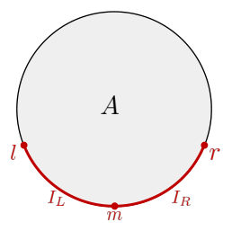
<figcaption class="paper-figure-caption"><b>Fig 1.</b> Figure 1: A disk region A and an interval I (thick red line), separated into IL = [l, m] and IR = [m, r].</figcaption>
</figure>
<figure class="paper-figure-card">
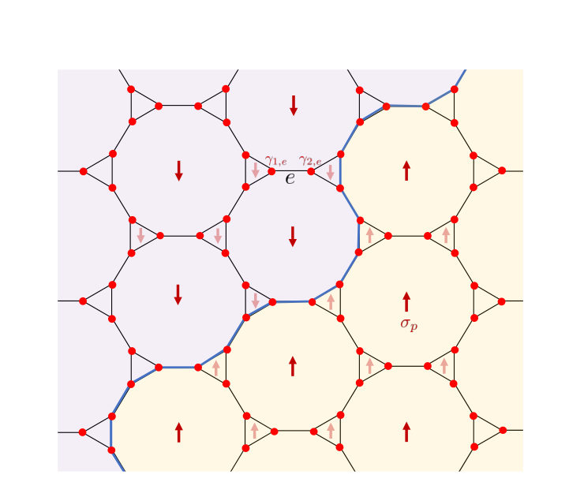
<figcaption class="paper-figure-caption"><b>Fig 2.</b> Figure 2: The lattice Γ. Its edges will be endowed with Kasteleyn orientation. Each vertex of Γ has a Majorana fermion (red dot), and each honeycomb lattice plaquette p has a qubit σp. We also place a fictitious qubit on each triangle plaquette, whose state is fixed by the majority rule of three qubits surrounding the triangle. The Z2 domain wall forms a closed loop (thick blue line).</figcaption>
</figure>
</div>

<p><strong>Summary.</strong> This work develops a rigorous framework to characterize fermionic 't Hooft anomalies on quantum lattices using anomaly indices derived from the obstruction to symmetric Short-Range-Entangled states. The key finding is that lattice constraints are often stricter than continuum predictions, revealing systematic mismatches between microscopic lattice symmetries and their macroscopic QFT counterparts.</p>
<p><strong>Why it may be interesting.</strong> The mismatch found between lattice and continuum anomalies provides crucial theoretical constraints for designing physical models that realize specific topological phases or symmetries, which is vital for understanding emergent phenomena in strongly correlated electron systems.</p>
<details>
<summary>Detailed structure</summary>
<p><strong>Main problem.</strong> The paper develops a lattice characterization of fermionic 't Hooft anomalies associated with finite internal symmetries in (1+1)D and (2+1)D.</p>
<p><strong>Main result.</strong> It establishes that exact lattice symmetries do not always realize the full continuum anomaly structure, demonstrating mismatches between lattice obstructions (like forbidding symmetric SRE states) and continuum predictions.</p>
<p><strong>Method.</strong> The analysis uses group cohomology to define hierarchy of fermionic anomaly indices ($(n_2, 
u_3)$ or $(n_2, n_3, 
u_4)$) derived from the obstruction to finding a symmetric Short-Range-Entangled (SRE) state on lattice tensor product Hilbert spaces.</p>
<p><strong>Model / system.</strong> The system consists of lattice models formed by the tensor product of onsite fermionic and bosonic Hilbert spaces. The symmetry is described by a finite group $G_f$ via a central extension $\mathbb{Z}_2 	o G_f 	o G_b$.</p>
<p><strong>Key observables.</strong> Anomaly indices ($(n_2, 
u_3)$ in 1D; $(n_2, n_3, 
u_4)$ in 2D), and the existence/obstruction of symmetric SRE states.</p>
<p><strong>Important parameters / regimes.</strong> The dimensionality (1+1)D or (2+1)D, and the structure of the bosonic group $G_b$.</p>
<p><strong>Assumptions / limitations.</strong> The analysis relies on characterizing symmetries via obstructions to SRE states and comparing these lattice invariants with continuum QFT anomaly classifications.</p>
<p><strong>Paper structure.</strong> The paper proceeds by developing the index machinery for (1+1)D, showing how trivial indices imply onsiteability. It then extends this to (2+1)D, identifying multiple anomaly layers and culminating in explicit constructions demonstrating mismatches between lattice and continuum anomalies.</p>
</details>
<details>
<summary>Abstract</summary>
<p>We develop a lattice characterization of fermionic 't Hooft anomalies of finite internal symmetries in (1+1)D and (2+1)D, formulated in terms of obstructions to symmetric short-range-entangled (SRE) states. We consider lattice systems formed by tensor product of onsite fermionic and bosonic Hilbert spaces, and finite internal symmetry given by a central extension $\mathbb Z_2^F\to G_f\to G_b$. We extract a hierarchy of fermionic anomaly indices for a given symmetry operator. In (1+1)D, an exact lattice symmetry is characterized by a pair of cohomological data $(n_2,ν_3)$. For $G_f=G_b\times\mathbb Z_2^F$, we show that a symmetry with trivial anomaly indices $(n_2,ν_3)$ is onsiteable and hence admits a symmetric SRE state, establishing that these indices faithfully detect the lattice anomaly. Comparing with continuum QFT, we find that exact lattice symmetries do not realize the additional $H^1(BG_b,\mathbb Z_2)$ anomaly layer in continuum QFT. In particular, for $G_b=\mathbb Z_2$, exact lattice symmetries realize only the even $\mathbb Z_4$ subgroup of the continuum $\mathbb Z_8$ classification. In (2+1)D, we identify three successive anomaly layers of cohomological data $(n_2,n_3,ν_4)$. We show that a nontrivial value of any layer obstructs symmetric SRE. For $G_f=G_b\times\mathbb Z_2^F$, it also forbids a symmetric invertible state. When the bosonic group $G_b$ is non-trivially extended by fermion parity, the lattice obstruction to SRE states does not generally coincide with the continuum 't Hooft anomaly. We explicitly construct a $\mathbb Z_4^F$ lattice symmetry in (2+1)D with nontrivial lattice anomaly index that forbids symmetric SRE states, even though its continuum anomaly is trivial. Our results highlight a mismatch between lattice and continuum anomalies and motivate a systematic study of which continuum anomalies admit exact microscopic lattice realizations.</p>
</details>
<p><sub><a href="#top">↑ back to top</a></sub></p>

<p><a id="paper-2608.13227"></a></p>
<h3 id="homomorphic-aggregation-of-continuous-variable-gkp-states"><a href="http://arxiv.org/abs/2608.13227v1">Homomorphic Aggregation of Continuous-Variable GKP States</a></h3>
<p><strong>Authors:</strong> Nilesh Vyas<br>
<strong>Type:</strong> theory · <strong>Category:</strong> quantum information and computing · <strong>PDF:</strong> <a href="https://arxiv.org/pdf/2608.13227v1">https://arxiv.org/pdf/2608.13227v1</a><br>
<strong>Analysis basis:</strong> full PDF text, analyzed in chunks
<strong>Topic relevance:</strong> <code>quantum measurements</code> <strong>3/5</strong> · <code>methods for driven-dissipative</code> <strong>1/5</strong> · <code>quantum optics experiment</code> <strong>1/5</strong></p>
<div class="figure-strip-hint">↔ Scroll figures horizontally</div>
<div class="paper-figures-scroll">
<figure class="paper-figure-card">

<figcaption class="paper-figure-caption"><b>Fig 1.</b> FIG. 1. Continuous-variable measurement-based quantum state aggregation protocol for n = 2 logical inputs. Stage 1 generates a Gottesman-Kitaev-Preskill (GKP) Bell pair |Φ+⟩L,AB from continuous-variable vacuum qunaught states |∅⟩L,A and |∅⟩L,B. In Stages 2 and 3, Data Mode 1 (|ψ1⟩L) and Data Mode 2 (|ψ2⟩L) couple to Ancilla Mode A via sequential beam splitters (BS) and a physical waveguide SWAP gate (×—×), followed by dual homodyne detection of quadratures ˆq1, ˆpA, and ˆq2. Stage 4 processes the extracted classical eigenvalues m1, mA, and m2 within a classical control unit to evaluate the net displacement vector mΣ = f(m1, mA, m2), executing the active feed-forward displacement ˆDB(−mΣ) on...</figcaption>
</figure>
<figure class="paper-figure-card">

<figcaption class="paper-figure-caption"><b>Fig 2.</b> FIG. 2. Performance scaling and hardware loss degradation of measurement-based continuous-variable GKP state aggregation. Top Row (Ideal Channel Scaling, η = 1.0): (a) Accumulated network noise standard deviation σout = p</figcaption>
</figure>
</div>

<p><strong>Summary.</strong> This paper presents an active, measurement-based protocol for homomorphically aggregating logical information encoded in CV GKP states. It proves that passive optical methods fail due to lattice compression and introduces a solution using homodyne measurements and feed-forward control. The result is crucial for scalable distributed quantum computing networks.</p>
<p><strong>Why it may be interesting.</strong> This work provides a concrete theoretical blueprint for scaling quantum computation beyond simple linear chains by addressing topological aggregation challenges inherent to continuous-variable encoding schemes.</p>
<details>
<summary>Detailed structure</summary>
<p><strong>Main problem.</strong> The core challenge is developing a method for homomorphically aggregating logical quantum information encoded in continuous-variable (CV) Gottesman-Kitaev-Preskill (GKP) states across multiple distributed nodes.</p>
<p><strong>Main result.</strong> An active, measurement-based framework utilizing GKP Bell states and homodyne feed-forward successfully computes the logical sum while preserving code space geometry up to correctable deformations.</p>
<p><strong>Method.</strong> The authors propose a Completely Positive Trace-Preserving (CPTP) map that bypasses the limitations of passive linear optics by incorporating active syndrome extraction and classical feed-forward displacement.</p>
<p><strong>Model / system.</strong> The system uses CV GKP states, which encode discrete logical information into an infinite-dimensional Hilbert space via a phase-space lattice. The process is analyzed within a measurement-based quantum computing (MBQC) framework.</p>
<p><strong>Key observables.</strong> Logical fidelity ($F$), total variation distance ($    ext{TV}$), output position quadrature ($\hat{q}<em ext_out="ext{out">{ ext{out}}$), and the intrinsic state noise variance ($\sigma</em>^2$).}</p>
<p><strong>Important parameters / regimes.</strong> Squeezing level ($r$), critical Voronoi cell boundary threshold ($q_{	ext{thresh}} = \sqrt{\pi}/2$), and channel attenuation ($\eta$).</p>
<p><strong>Assumptions / limitations.</strong> The protocol assumes the ability to perform intermediate syndrome extraction at network vertices to reset physical noise accumulation, and it operates within a finite-energy GKP subspace.</p>
<p><strong>Figures summary.</strong> Figures illustrate performance scaling under various conditions: (a) linear cascade vs. logarithmic tree topology for variance ($\sigma_{	ext{out}}$); (b) logical fidelity convergence; and (c)-(f) the impact of physical channel attenuation ($\eta < 1$) on achievable fidelity.</p>
<p><strong>Paper structure.</strong> The paper first establishes the failure modes of passive optics due to lattice compression. It then introduces the active, measurement-based protocol using GKP Bell states and homodyne measurements. Finally, it derives analytical bounds on fidelity and security, showing that logarithmic tree routing is necessary for scalability.</p>
</details>
<details>
<summary>Abstract</summary>
<p>Aggregating logical quantum information encoded in continuous-variable phase space is essential for distributed quantum computing. However, passive linear optics fail for non-Gaussian Gottesman-Kitaev-Preskill (GKP) codes due to symplectic lattice compression and entanglement-induced decoherence. We present an active, measurement-based framework for the homomorphic aggregation of multi-node GKP states. Utilizing GKP Bell states and homodyne feed-forward, we construct a completely positive trace-preserving map that computes the logical sum of distributed states while preserving the logical code space geometry up to correctable finite-squeezing deformations. We prove this protocol operates as an approximate quantum non-demolition measurement, bound its cryptographic leakage for continuous one-time pads, and derive analytical logical fidelity limits under finite-squeezing constraints.</p>
</details>
<p><sub><a href="#top">↑ back to top</a></sub></p>

<p><a id="paper-2608.12465"></a></p>
<h3 id="superconductivity-in-the-math466math-math467math-hubbard-model-from-symmetry-preserving-neural-network-quantum-states"><a href="http://arxiv.org/abs/2608.12465v1">Superconductivity in the $t$-$t'$ Hubbard Model from Symmetry-Preserving Neural-Network Quantum States</a></h3>
<p><strong>Authors:</strong> Riccardo Rende, Luciano Loris Viteritti, Antoine Georges<br>
<strong>Type:</strong> theory · <strong>Category:</strong> strongly correlated electrons · <strong>PDF:</strong> <a href="https://arxiv.org/pdf/2608.12465v1">https://arxiv.org/pdf/2608.12465v1</a><br>
<strong>Analysis basis:</strong> full PDF text, analyzed in chunks
<strong>Topic relevance:</strong> <code>analog quantum simulation</code> <strong>3/5</strong> · <code>methods for driven-dissipative</code> <strong>1/5</strong> · <code>quantum measurements</code> <strong>1/5</strong></p>
<div class="figure-strip-hint">↔ Scroll figures horizontally</div>
<div class="paper-figures-scroll">
<figure class="paper-figure-card">

<figcaption class="paper-figure-caption"><b>Fig 1.</b> FIG. 1. Pictorial representation of the variational energy landscape in the relevant basin of attraction, as a function of the wave-function parameters (see main text). Panel (a): With an ansatz that breaks the symmetries of the Hamil- tonian the landscape is rugged: the optimization is easily trapped in local minima corresponding to broken-symmetry, pure stripe states (gray dots), and tends to miss the lower- lying minimum in which stripe and superconducting order can coexist (teal). Panel (b): The proposed symmetry- preserving ansatz reshapes the landscape into an effectively “convex” one, with a single minimum to which the optimiza- tion converges reliably.</figcaption>
</figure>
<figure class="paper-figure-card">

<figcaption class="paper-figure-caption"><b>Fig 2.</b> FIG. 2. Optimization of the SBP wave function [see Eq. (2)] and of the BP wave function [see Eq. (5)] for two different random seeds, for the t-t′ Hubbard model [see Eq. (1)] on a 12 × 12 lattice at t′ = −0.2, U = 8.0, and doping δ = 1/8. Panel (a): Variational energy per site as a function of the optimization step. Panel (b) and (c): Spin and charge symmetry breaking parameters δs and δn [see Eq. (6)] as a function of the optimization steps.</figcaption>
</figure>
<figure class="paper-figure-card">

<figcaption class="paper-figure-caption"><b>Fig 3.</b> FIG. 3. Local charge density ⟨ˆni⟩and spin ⟨ˆSz i ⟩on each site of the 12×12 lattice, for the two BP solutions obtained from the two random seeds of Fig. 2. The color of each site encodes the charge density ⟨ˆni⟩, as indicated by the colorbar, while the arrows show the local spin ⟨ˆSz i ⟩.</figcaption>
</figure>
<figure class="paper-figure-card">

<figcaption class="paper-figure-caption"><b>Fig 4.</b> FIG. 4. d-wave pairing correlation function Cp(|r|) [see Eq. (7)] for the t-t′ Hubbard model with periodic boundary conditions, at t′ = −0.2, U = 8.0, and doping δ = 1/8, as a function of the distance |r|. Inset: d-wave order parameter ∆SC [see Eq. (8)] as a function of the inverse linear size 1/L, together with the AFQMC results of Ref. [6].</figcaption>
</figure>
<figure class="paper-figure-card">

<figcaption class="paper-figure-caption"><b>Fig 5.</b> FIG. 5. Real space spin-spin correlation function Cs(r) (see definition in the main text), with r = (x, y) the relative positions, on the 24 × 24 lattice for the t-t′ Hubbard model with periodic boundary conditions, at t′ = −0.2, U = 8.0, doping δ = 1/8.</figcaption>
</figure>
</div>

<p><strong>Summary.</strong> This work tackles the long-standing mystery of superconductivity in the 2D doped Hubbard model by introducing a novel Symmetry-Preserving Neural-Network Quantum State (SBP) ansatz. By mathematically enforcing translational symmetry, the method bypasses variational biases that favor incorrect broken-symmetry states. The results strongly suggest d-wave superconductivity exists for key parameters, providing significant theoretical progress.</p>
<p><strong>Why it may be interesting.</strong> The development of symmetry-preserving NQS is a powerful general technique applicable across many strongly correlated systems where ground state degeneracy or symmetry breaking is a major theoretical hurdle. This methodology could be adapted to study exotic phases in AMO platforms simulating Hubbard physics.</p>
<details>
<summary>Detailed structure</summary>
<p><strong>Main problem.</strong> Determining the true nature of the ground state, particularly superconducting order, in the highly debated two-dimensional doped Hubbard model.</p>
<p><strong>Main result.</strong> The authors provide robust evidence for d-wave superconductivity in the 1/8-doped model by using a symmetry-preserving ansatz that avoids artificial biases found in previous variational methods.</p>
<p><strong>Method.</strong> They employ Neural-Network Quantum States (NQS) via a novel Symmetry-Preserving Backflow Pairing (SBP) ansatz, which is designed to enforce translational symmetry during optimization.</p>
<p><strong>Model / system.</strong> The study focuses on the two-dimensional doped Hubbard model, governed by an extended Hamiltonian involving hopping ($t, t'$) and onsite repulsion ($U$). The system is simulated at finite doping ($\delta=1/8$) relevant to cuprate superconductors.</p>
<p><strong>Key observables.</strong> Superconducting order parameter ($\Delta_{SC}$), pairing correlation function $C(r)$, and measures of spatial modulation ($\delta_n, \delta_s$).</p>
<p><strong>Important parameters / regimes.</strong> $t'/t=-0.2$, $U/t=8.0$, doping $\delta = 1/8$. Lattice sizes up to $24	imes24$.</p>
<p><strong>Assumptions / limitations.</strong> The primary assumption is that enforcing symmetries directly into the wave function ansatz (SBP) resolves ambiguities caused by variational parameterization biases leading to broken-symmetry minima.</p>
<p><strong>Figures summary.</strong> Figures compare energy optimization and symmetry breaking parameters between SBP and standard Backflow Pairing (BP) ansätze, showing SBP's superior convergence toward a symmetric ground state. Other figures illustrate local charge/spin modulations for the BP ansatz.</p>
<p><strong>Paper structure.</strong> The paper first establishes the physical problem and limitations of existing variational methods. It then introduces the SBP ansatz, details its mathematical formulation using neural networks (Transformer architecture), presents results comparing SBP to competing ansätze, and finally quantifies the evidence for d-wave superconductivity via correlation functions.</p>
</details>
<details>
<summary>Abstract</summary>
<p>Despite its fundamental importance in the theory of strongly correlated electrons, the nature of the ground state of the two-dimensional doped Hubbard model remains intensely debated. Variational approaches provide a powerful route to this problem, but their conclusions can depend sensitively on the chosen wave-function parameterization, the mean-field initialization, or the pinning fields used to guide the optimization, as well as on boundary conditions. This can favor one type of symmetry breaking over another, making it difficult to distinguish the genuine interplay of intertwined or competing orders from biases induced by the variational parameterization. Here, we introduce the Symmetry-Preserving Backflow Pairing (SBP) ansatz, a neural-network wave function that respects translational symmetry by construction and thereby avoids these broken-symmetry minima. The SBP ansatz reaches state-of-the-art variational energies for the $t$-$t'$ Hubbard model on lattices up to $24\times24$ with $504$ electrons, below those of competing pure stripe solutions. By extrapolating to the thermodynamic limit, we find robust evidence for $d$-wave superconducting order, resolving a long-standing question about the $1/8$-doped model at $t'/t=-0.2$ and $U/t=8.0$. Built on general principles of symmetry and locality, the SBP wave function provides a broadly applicable variational representation for challenging interacting fermionic systems.</p>
</details>
<p><sub><a href="#top">↑ back to top</a></sub></p>

<p><a id="paper-2608.12452"></a></p>
<h3 id="the-moire-capacitor-effect-and-stabilization-of-fractional-chern-insulators-in-rhombohedral-graphene-superlattices"><a href="http://arxiv.org/abs/2608.12452v1">The "Moiré Capacitor Effect" and Stabilization of Fractional Chern Insulators in Rhombohedral Graphene Superlattices</a></h3>
<p><strong>Authors:</strong> Nicolas Regnault, Heqiu Li, Yves H. Kwan, B. Andrei Bernevig, Jonah Herzog-Arbeitman<br>
<strong>Type:</strong> theory · <strong>Category:</strong> strongly correlated electrons · <strong>PDF:</strong> <a href="https://arxiv.org/pdf/2608.12452v1">https://arxiv.org/pdf/2608.12452v1</a><br>
<strong>Analysis basis:</strong> full PDF text, analyzed in chunks
<strong>Topic relevance:</strong> <code>analog quantum simulation</code> <strong>3/5</strong> · <code>Frenkel-Kontorova</code> <strong>1/5</strong> · <code>Keldysh / 2PI / non-Gaussian methods</code> <strong>1/5</strong></p>
<div class="figure-strip-hint">↔ Scroll figures horizontally</div>
<div class="paper-figures-scroll">
<figure class="paper-figure-card">

<figcaption class="paper-figure-caption"><b>Fig 1.</b> FIG. 1. (a) Structure of R5G, including two sublattice-polarized surface states. (b) Non-interacting moir´e band structure at V = 30meV and θ = 0.77◦, showing strong (weak) moir´e Umklapp in the valence (conduction) bands. States are colored by layer polarization according to panel (a). The conduction bands are essentially folded from pristine R5G (c), while the valence bands exhibit moir´e-modulated density (d). The filled valence bands generate Hartree terms (the moir´e capacitor effect) which imprint on the conduction bands (e), causing moir´e Umklapp.</figcaption>
</figure>
<figure class="paper-figure-card">

<figcaption class="paper-figure-caption"><b>Fig 2.</b> FIG. 2. (a) HF band structure for the ν = 1, C = 1 state in θ = 0.77◦R5G/hBN with Vval. = 0 meV on a 18 × 18 system. Only bands in the polarized spin-↑sector are shown. Dotted line indicates Fermi level. (b) TDHF spectrum as a function of momentum |q|/q1. Results for multiple system sizes Nx × Ny with Nx = Ny = 8, 9, . . . , 20 are overlaid. Red dots indicate momenta with complex/negative TDHF eigenvalues, indicating a local instability. (c, d) Same as (a, b) except with Vval. = 8 meV. (e) Top/bottom shows charge density variation of the occupied HF band/valence background with Vval. = 8 meV. We use parameters V = 22 meV, Vtb = 32 meV, ψval. = ( 4π</figcaption>
</figure>
<figure class="paper-figure-card">

<figcaption class="paper-figure-caption"><b>Fig 3.</b> FIG. 3. (a) HF phase diagram for θ = 0.77◦R5G/hBN at ν = 1. The dark blue region labeled ‘only C = 1’ indicates where the HF ground state has C = 1, and no C = 0 state is obtained even as a metastable solution. The light blue region labeled ‘EC=1 &lt; EC=0’ indicates where the HF ground state has C = 1, but metastable C = 0 solutions are also obtained. The small pink region at Vval. = 10 meV indicates where the HF ground state has C = 0, but metastable C = 1 solutions are also obtained. The grey region labeled ‘gapless’ denotes where the HF ground state does not have a positive indirect gap. System size is 12×12 and 3 conduction bands are kept. (b) Effective bandwidth W2/3 (see text for...</figcaption>
</figure>
<figure class="paper-figure-card">

<figcaption class="paper-figure-caption"><b>Fig 4.</b> Fig. 4(c) plots the FCI gap for Hilbert spaces up to 1 × 109. For n3 = 1, . . . , 5, both 14,2 and 14,5 orbital truncations show convergence in n2 by n2 = 6. The 14,2 and 17,2 truncations show identical trends in ∆FCI for ac- cessible n2. Finally, the 17,5 calculation exhibits nearly identical gaps for n3 = 1, 2, and behaves similarly to the 14,5 calculation. Our results suggest that ∆FCI converges to a finite &gt; 0.1meV gap (corresponding to a temperature</figcaption>
</figure>
<figure class="paper-figure-card">

<figcaption class="paper-figure-caption"><b>Fig 5.</b> FIG. 4. Multi-band convergence of the ν = 2/3 FCI on 21 sites (using the parameters of Fig. 2(c,d)). (a) Single-particle levels of ¯Hcon sorted by energy. Orbitals are truncated based on the energy cutoff. (b) The 14,2 truncation is shown in cyan with solid (open) circles denoting orbitals in the second (third) band. The 17,2/14,5/17,5 truncation includes the ad- ditional blue/red/orange orbitals. (c) FCI gap as a function of band mixing. (d) ED spectra (colored as in (b)) show that the FCI ground states rapidly converge and the gap to the continuum is stabilized at large truncations. (e) Momentum- resolved density ⟨c† kck⟩in the C = 1 HF band exhibits in- creased weight near the mBZ edge,...</figcaption>
</figure>
</div>

<p><strong>Summary.</strong> This paper develops a theory showing that an electrostatic 'moiré capacitor effect' stabilizes Fractional Chern Insulators (FCIs) in graphene superlattices. Using advanced numerical methods like ED, the authors confirm FCI existence at $
u=2/3$ while demonstrating that this moiré potential is essential to suppress competing Charge Density Wave phases.</p>
<p><strong>Why it may be interesting.</strong> The work provides a detailed theoretical mechanism (the moiré capacitor effect) explaining the stability of exotic topological states like FCIs in solid-state systems, which is highly relevant for understanding correlated electron physics and emergent quantum phases.</p>
<details>
<summary>Detailed structure</summary>
<p><strong>Main problem.</strong> The primary goal is to provide a theoretical understanding of how the moiré potential stabilizes Fractional Chern Insulators (FCIs) in rhombohedral graphene superlattices, and to distinguish these states from competing Charge Density Wave (CDW) phases.</p>
<p><strong>Main result.</strong> The 'moiré capacitor effect,' arising from electrostatically imprinting valence charge density onto conduction bands, is crucial for stabilizing the FCI state. Furthermore, band mixing is shown to be necessary to suppress CDW tendencies and realize a clean FCI ground state.</p>
<p><strong>Method.</strong> The study employs theoretical derivations of effective Hamiltonians combined with advanced numerical techniques, including Hartree-Fock (HF), Time-Dependent HF (TDHF), and multi-band Exact Diagonalization (ED) calculations on the many-body Hilbert space.</p>
<p><strong>Model / system.</strong> The system is rhombohedral graphene superlattices ($    ext{RLG/hBN}$). The physics is governed by conduction electrons interacting with a moiré potential derived from occupied valence bands, leading to an effective Hamiltonian incorporating this electrostatic term.</p>
<p><strong>Key observables.</strong> Chern number ($C$), FCI gap size ($\Delta_{	ext{FCI}}$), Potential Energy Surface (PES) gaps, and the Particle Entanglement Spectrum (PES) counts used to distinguish FCI from CDW states.</p>
<p><strong>Important parameters / regimes.</strong> Filling factors ($
u=1$ and $
u=2/3$), moiré potential strength ($V_{ ext{val.}}$), and various interaction parameters ($V, V_{ ext{tb}}$).</p>
<p><strong>Assumptions / limitations.</strong> The analysis relies on specific orbital truncations for ED calculations and assumes that the moiré capacitor effect provides a dominant electrostatic contribution to stabilize the correlated state.</p>
<p><strong>Figures summary.</strong> Figures illustrate band structure splitting due to the moiré potential, compare HF/TDHF spectra showing instability cure by finite $V_{	ext{val.}}$, and use PES analysis to distinguish FCI (168 states) from CDW counting (63 states).</p>
<p><strong>Paper structure.</strong> The paper progresses by first establishing the necessity of the moiré capacitor effect for stabilizing a parent CI state ($
u=1$). It then develops a general theory, using ED calculations at $
u=2/3$, to confirm FCI stability while simultaneously ruling out CDW competition through entanglement spectrum analysis.</p>
</details>
<details>
<summary>Abstract</summary>
<p>While the necessity of a moiré potential for fractional Chern insulators (FCIs) in rhombohedral graphene-hBN superlattices, first predicted in Ref. 1, is now grounded in experiments, a theory of its origin and importance remains at large. We present a mechanism---the moiré capacitor effect---that enhances the moiré potential by electrostatically imprinting the valence charge density onto the conduction bands. We derive the analytical form of this term and reveal its crucial role in stabilizing a parent state with Chern number $C=1$ at filling $ν=1$. We propose a parent state theory which posits that stability of the Chern insulator and flatness of its hole excitations are necessary for obtaining FCIs upon doping. We then perform multi-band exact diagonalization calculations to confirm the emergence of FCIs at $ν= 2/3$ in the presence of the moiré capacitor effect. Our FCI state is stabilized by inter-band fluctuations, unlike in the moire-free case which collapses with band-mixing. We provide the first consistent theory for this state in aligned samples and explain its absence in unaligned ones.</p>
</details>
<p><sub><a href="#top">↑ back to top</a></sub></p>

<p><a id="paper-2608.13110"></a></p>
<h3 id="classical-simulation-and-design-frontiers-for-ibms-doped-clifford-sampling-experiment"><a href="http://arxiv.org/abs/2608.13110v1">Classical Simulation and Design Frontiers for IBM's Doped Clifford Sampling Experiment</a></h3>
<p><strong>Authors:</strong> Hidetaka Manabe, Hanfeng Gu, Feng Pan<br>
<strong>Type:</strong> theory · <strong>Category:</strong> numerical methods · <strong>PDF:</strong> <a href="https://arxiv.org/pdf/2608.13110v1">https://arxiv.org/pdf/2608.13110v1</a><br>
<strong>Analysis basis:</strong> full PDF text, analyzed in chunks
<strong>Topic relevance:</strong> <code>methods for driven-dissipative</code> <strong>3/5</strong> · <code>QC/QI experiment</code> <strong>1/5</strong></p>
<div class="figure-strip-hint">↔ Scroll figures horizontally</div>
<div class="paper-figures-scroll">
<figure class="paper-figure-card">

<figcaption class="paper-figure-caption"><b>Fig 1.</b> Figure 1: Mapping an open-boundary one-dimensional brickwork circuit to its tensor network representation. (a) A layout of the brickwork Clifford circuit [1]. (b) The corresponding PEPS-like tensor network geometry.</figcaption>
</figure>
<figure class="paper-figure-card">

<figcaption class="paper-figure-caption"><b>Fig 2.</b> Figure 2: Deterministic contraction path for exact amplitude contraction. The numbers indicate the order in which tensors are visited, and the arrows indicate the direction of the sweep. d = 8 in this figure.</figcaption>
</figure>
<figure class="paper-figure-card">

<figcaption class="paper-figure-caption"><b>Fig 3.</b> Figure 3: The two possible paired steps. The purple region contains the tensors already absorbed into the boundary tensor, and the yellow region contains the next two tensors to be contracted.</figcaption>
</figure>
<figure class="paper-figure-card">

<figcaption class="paper-figure-caption"><b>Fig 4.</b> Figure 4: Total contraction cost (left) and contraction width (right) for the n = 70 brickwork tensor networks. The blue lines show the constructive path, while the orange lines show the paths obtained by HyperOptimizer. Black open circles indicate the exact minimum contraction widths W ∗certified using Ratcatcher.</figcaption>
</figure>
<figure class="paper-figure-card">

<figcaption class="paper-figure-caption"><b>Fig 5.</b> Figure 5: Three-region decomposition for batched contraction with n = d = 10 and k = 2. The fixed region Tfix spans qubits q1, . . . , q8, while the output indices on q9 and q10 are left open. The early and late regions contain the first c = 4 layers and remaining d −c = 6 entangling layers, respectively.</figcaption>
</figure>
</div>

<p><strong>Summary.</strong> The paper presents an efficient tensor network contraction method to classically simulate IBM's large-scale doped Clifford random circuit sampling experiment. By mapping the 70-qubit circuit onto a structured tensor network, they achieved a significant computational result within minutes using advanced GPU clusters. This work establishes a quantitative classical benchmark for assessing quantum advantage in randomized quantum circuits.</p>
<p><strong>Why it may be interesting.</strong> This work provides a concrete, scalable classical benchmark for simulating complex random quantum circuits, which is crucial for understanding the resource requirements needed to surpass current NISQ-era hardware capabilities in quantum information processing.</p>
<details>
<summary>Detailed structure</summary>
<p><strong>Main problem.</strong> To classically simulate the complex amplitude evaluation for IBM's doped Clifford random circuit sampling (RCS) experiment to establish a resource baseline.</p>
<p><strong>Main result.</strong> The authors successfully simulated all 2051 output batches in 37.3 minutes using 32 H100 GPUs, yielding a log-XEB estimate compatible with IBM's fidelity lower bound.</p>
<p><strong>Method.</strong> They developed and applied a deterministic temporal-boundary tensor network contraction approach to evaluate the exact circuit amplitude by mapping the quantum circuit onto a PEPS-like structure.</p>
<p><strong>Model / system.</strong> The system is an open-boundary, one-dimensional brickwork circuit involving 70 qubits, 70 entangling layers (CZ gates), and 468 inserted T gates, mimicking IBM's experimental setup.</p>
<p><strong>Key observables.</strong> Log-XEB estimate of 0.35034; contraction width $\lceil d/2 
ceil$; total simulation time (37.3 minutes).</p>
<p><strong>Important parameters / regimes.</strong> Number of qubits ($n=70$), circuit depth ($d=70$), number of nodes (32), and GPU type (NVIDIA H100).</p>
<p><strong>Assumptions / limitations.</strong> The compatibility of the log-XEB estimate with fidelity relies on Porter–Thomas and scrambled-noise assumptions.</p>
<p><strong>Figures summary.</strong> Figure 1 maps the circuit to a tensor network; Figure 2 details the deterministic temporal-state contraction path (Algorithm 1); Figure 4 compares the cost/width of constructive vs. heuristic paths.</p>
<p><strong>Paper structure.</strong> The paper introduces the problem, details the novel deterministic tensor network contraction method for open boundaries, presents the computational results on the IBM instance, and concludes by positioning the technique as a general diagnostic tool for future quantum experiments.</p>
</details>
<details>
<summary>Abstract</summary>
<p>We classically simulate the IBM doped Clifford random circuit sampling experiment, comprising $70$ qubits, $70$ entangling layers, and $468$ inserted $T$ gates. A deterministic temporal-boundary tensor network contraction approach is specifically designed to tackle such open-boundary one-dimensional brickwork circuits with operator-Schmidt-rank-$2$ entangling gates. For an $n$-qubit circuit of depth $d$, the resulting unsliced path evaluates an exact amplitude with contraction width $\lceil d/2\rceil$; Ratcatcher calculations certify that no smaller width is possible for the tested instances. Because one-qubit gates are absorbed without changing the network topology, the width and dense scheduled contraction cost are independent of their values and of the number and placement of $T$ gates. For the IBM instance, its largest intermediate tensor contains $2^{35}$ complex64 entries (256 times smaller than IBM's estimation), corresponding to a tensor payload of $256$ GiB, and is distributed across eight GPUs within a node. Using 32 nodes, with eight NVIDIA H100 GPUs per node, we completed all 2051 amplitude batches corresponding to IBM's published output bitstrings in 37.3 minutes. The resulting probabilities yield a log-XEB estimate of $0.35034$ with a 95\% interval of $[0.29763,0.40305]$. Under the Porter--Thomas and scrambled-noise assumptions, this is numerically compatible with IBM's fidelity lower bound; separately, fidelity-weighted resource accounting projects a 583-contraction workload with a 10.6-minute makespan on the same 32 nodes. More broadly, the approach provides a practical diagnostic for experimental outputs and a quantitative tool for designing future doped Clifford sampling experiments.</p>
</details>
<p><sub><a href="#top">↑ back to top</a></sub></p>

<p><a id="paper-2608.12884"></a></p>
<h3 id="hybrid-hpc-quantum-simulations-dft-quantum-embedding-for-molecular-systems"><a href="http://arxiv.org/abs/2608.12884v1">Hybrid HPC-Quantum Simulations: DFT-Quantum Embedding for Molecular Systems</a></h3>
<p><strong>Authors:</strong> Namrata Manglani, Samrit Maity, Shashank Sharma, Tejjan Arora, Soham Phulare, Shreyas Kadam, Sanjay Wandhekar<br>
<strong>Type:</strong> theory · <strong>Category:</strong> strongly correlated electrons · <strong>PDF:</strong> <a href="https://arxiv.org/pdf/2608.12884v1">https://arxiv.org/pdf/2608.12884v1</a><br>
<strong>Analysis basis:</strong> full PDF text, analyzed in chunks
<strong>Topic relevance:</strong> <code>Keldysh / 2PI / non-Gaussian methods</code> <strong>3/5</strong> · <code>quantum measurements</code> <strong>1/5</strong></p>
<div class="figure-strip-hint">↔ Scroll figures horizontally</div>
<div class="paper-figures-scroll">
<figure class="paper-figure-card">

<figcaption class="paper-figure-caption"><b>Fig 1.</b> Figure 1.1: (a) Strong electron correlation causing interdependent motion. (b) Bond dissociation accompanied by electronic state changes. (c) Multi-reference character from multiple important configurations.</figcaption>
</figure>
<figure class="paper-figure-card">

<figcaption class="paper-figure-caption"><b>Fig 2.</b> Figure 2.1: Evolution of Materials Modeling Methods [12].</figcaption>
</figure>
<figure class="paper-figure-card">

<figcaption class="paper-figure-caption"><b>Fig 3.</b> Figure 2.2: Self-Consistent Field Loop Process</figcaption>
</figure>
<figure class="paper-figure-card">

<figcaption class="paper-figure-caption"><b>Fig 4.</b> Figure 3.1: Schematic representation of key quantum concepts including superposition, entanglement, and measurement collapse. (Author-generated illustration)</figcaption>
</figure>
<figure class="paper-figure-card">

<figcaption class="paper-figure-caption"><b>Fig 5.</b> Figure 3.2: Circuit structures of four variational ansatz architectures investigated in recent benchmarking: (a) Double Excitation Gates, (b) Particle-Conserving U2 (Hard- ware Efficient), (c) UCCSD (Chemically Inspired), and (d) k-UpCCGSD. Adapted from Boutakka et al. [1].</figcaption>
</figure>
</div>

<p><strong>Summary.</strong> The paper proposes a Hybrid DFT-Quantum Embedding (QDFT) framework to overcome the limitations of standard Density Functional Theory in simulating strongly correlated molecular systems. It achieves this by partitioning large molecules, treating the critical active space with a Variational Quantum Eigensolver (VQE) and the rest classically via DFT. This hybrid approach aims to combine classical scalability with quantum mechanical accuracy for complex electronic structure problems.</p>
<p><strong>Why it may be interesting.</strong> This directly addresses the core challenge in modern quantum chemistry: bridging the gap between the massive scale of classical computation (HPC/DFT) and the high accuracy required for strongly correlated phenomena, making it highly relevant to AMO physics and open quantum systems modeling.</p>
<details>
<summary>Detailed structure</summary>
<p><strong>Main problem.</strong> Developing scalable simulations for molecular electronic structure that accurately capture strong electron correlation effects, which are poorly handled by standard DFT approximations.</p>
<p><strong>Main result.</strong> The hybrid QDFT framework successfully integrates classical HPC scalability with quantum accuracy potential, demonstrating improvement in selected electronic-structure properties.</p>
<p><strong>Method.</strong> A novel Quantum Embedding (QDFT) approach partitions large systems: the active space is treated via VQE on a quantum computer, while the environment is handled by classical DFT.</p>
<p><strong>Model / system.</strong> The focus is on molecular systems undergoing electronic structure calculations. The methodology combines DFT for long-range screening with variational quantum circuits (VQE) to model short-range, strongly correlated interactions.</p>
<p><strong>Key observables.</strong> Electronic-structure properties, energy eigenvalues ($\Delta E$), computational bottlenecks, and QPU execution requirements.</p>
<p><strong>Important parameters / regimes.</strong> Energy difference thresholds ($10^{-5} 	ext{ Ha}$), range-separation parameters ($\mu, \alpha, eta$), and qubit resources/noise levels.</p>
<p><strong>Assumptions / limitations.</strong> The initial work focuses on noiseless quantum simulation to systematically evaluate the framework's potential before tackling hardware noise limitations.</p>
<p><strong>Figures summary.</strong> Not specified in detail, but concepts involve illustrating strong electron correlation, bond dissociation with state changes, and multi-reference character.</p>
<p><strong>Paper structure.</strong> The paper introduces the QDFT concept by identifying the limitations of DFT for correlated systems. It details the framework's components (active space selection, embedding) and presents results showing potential improvements while maintaining HPC scalability. Future work focuses on noisy simulation and runtime estimation.</p>
</details>
<details>
<summary>Abstract</summary>
<p>Scientific simulations demand methods combining scalability with predictive accuracy. Density Functional Theory (DFT) on High-Performance Computing (HPC) enables large-scale electronic-structure simulations but is limited by approximations affecting strongly correlated systems and band-gap predictions. Quantum computing offers a pathway to address this, though current Noisy Intermediate-Scale Quantum (NISQ) hardware remains constrained by qubit resources, noise, and execution cost.   This work presents a hybrid DFT-Quantum Embedding (QDFT) framework integrating classical HPC-based DFT with a quantum electronic-structure solver. Large systems are partitioned to isolate a chemically relevant active space, treated via the Variational Quantum Eigensolver (VQE), while the remaining degrees of freedom are described by DFT. The framework incorporates active-space selection, embedded Hamiltonian construction, symmetry preservation, operator mapping, self-consistent density updating, and modular classical-quantum coupling.   We focus on noiseless quantum simulation to systematically evaluate accuracy, convergence, active-space dependence, computational cost, and HPC scalability without hardware noise. Detailed profiling identifies computational bottlenecks and highlights limitations of CPU-based quantum simulation. A QPU runtime-estimation methodology is additionally developed to assess execution requirements on actual quantum hardware.   Results demonstrate quantum embedding's potential to improve selected electronic-structure properties while retaining classical HPC's scalability. Noisy quantum simulation and QPU execution remain key future directions, providing a pathway toward practical, scalable HPC-quantum hybrid simulations as hardware matures.</p>
</details>
<p><sub><a href="#top">↑ back to top</a></sub></p>

<p><a id="paper-2608.12830"></a></p>
<h3 id="improved-measurement-cost-scaling-in-the-nonorthogonal-quantum-eigensolver"><a href="http://arxiv.org/abs/2608.12830v1">Improved Measurement Cost Scaling in the Nonorthogonal Quantum Eigensolver</a></h3>
<p><strong>Authors:</strong> Mingyu Kang, K. Birgitta Whaley<br>
<strong>Type:</strong> theory · <strong>Category:</strong> quantum information and computing · <strong>PDF:</strong> <a href="https://arxiv.org/pdf/2608.12830v1">https://arxiv.org/pdf/2608.12830v1</a><br>
<strong>Analysis basis:</strong> full PDF text, analyzed in chunks
<strong>Topic relevance:</strong> <code>quantum measurements</code> <strong>3/5</strong> · <code>analog quantum simulation</code> <strong>1/5</strong></p>
<div class="figure-strip-hint">↔ Scroll figures horizontally</div>
<div class="paper-figures-scroll">
<figure class="paper-figure-card">

<figcaption class="paper-figure-caption"><b>Fig 1.</b> FIG. 1. Performance of noiseless NOQE for (a)–(c) linear hydrogen chains (upper panels) and (d)–(f) regular hydrogen rings (lower panels) of various numbers of atoms N in the STO-3G basis, compared with classical methods such as NOCI, UHF and UHF-MP2. The distance between nearest-neighbor atoms is set as 1.5 ˚A. (a,d) Ground-state energy error |E −EFCI| versus N. (b,e) Condition number of the unthresholded overlap matrix κ(S) versus the number of reference states M(N) =  N ⌈N/2⌉  .</figcaption>
</figure>
<figure class="paper-figure-card">

<figcaption class="paper-figure-caption"><b>Fig 2.</b> FIG. 2. Performance of finite-shot NOQE with overlap thresholding for the ground state energies E0 of (a)–(c) linear hydrogen chains (upper panels) and (d)–(f) regular hydrogen rings (lower panels). Diagonal entries of H are subject to real zero-mean noise with standard deviation σ = 10−3 Ha, while off-diagonal entries of H and S are perturbed on the upper triangle by independent zero-mean complex noise whose real and imaginary parts each have standard deviation σ = 10−3/ √</figcaption>
</figure>
<figure class="paper-figure-card">

<figcaption class="paper-figure-caption"><b>Fig 3.</b> Figure 1(b) and (e) show the bare condition number of the overlap matrix κ(S), before any thresholding, as a function of system size. Both NOCI and NOQE exhibit a clear increasing trend, with the NOQE overlap matrices slightly more ill-conditioned. Figures 1(c) and (f) plot the spin contamination, measured by ⟨ˆS2⟩−S(S + 1), which is substantially smaller for NOQE than for NOCI, consistent with the spin-purification property of NOQE emphasized in Ref. [22].</figcaption>
</figure>
<figure class="paper-figure-card">

<figcaption class="paper-figure-caption"><b>Fig 4.</b> Figure 1 first studies the system-size dependence of noiseless NOQE, where the projected Hamiltonian and overlap matrices are evaluated exactly before any finite- shot measurement noise is added. In Fig. 1(a) and (d), we compare the NOQE ground-state energy error with those of several classical methods: unrestricted Hartree-Fock (UHF) uses the lowest-energy determinant among the M UHF states before dressing, UHF with second-order Møller–Plesset perturbation theory (UHF-MP2), applies an MP2 correction to this single determinant [41], non- orthogonal configuration interaction (NOCI) diagonalizes in the subspace of the M UHF states [42, 43], and NOQE diagonalizes in the subspace of the M...</figcaption>
</figure>
<figure class="paper-figure-card">

<figcaption class="paper-figure-caption"><b>Fig 5.</b> Figure 2 introduces finite-shot measurement sampling noise and overlap thresholding to assess the scalability criteria in Def. 2. We set the standard deviation σ of the independent matrix-element noise to 10−3 (see the cap- tion of Fig. 2 for details), which places the simulations in a regime where a scalable thresholding scheme exists and the overall energy errors remain below chemical accu- racy. The number of shots per matrix element required to maintain this fixed element noise may further grow modestly with system size, depending on the Pauli-word grouping [30–32] or basis-rotation grouping [33] used in</figcaption>
</figure>
</div>

<p><strong>Summary.</strong> This paper tackles the computational bottleneck in using quantum computers to find molecular energies via the Nonorthogonal Quantum Eigensolver (NOQE). By introducing a scalable thresholding scheme based on the overlap matrix's condition number, the authors theoretically improve the required measurement shot count scaling from $O(M^3)$ to $O(M)$. This advancement makes simulating larger and more complex quantum chemical systems feasible with current noisy hardware.</p>
<p><strong>Why it may be interesting.</strong> This work directly addresses the resource estimation (measurement time/shots) required for near-term quantum simulation of chemistry problems, which is a core concern in applying quantum algorithms to physical systems.</p>
<details>
<summary>Detailed structure</summary>
<p><strong>Main problem.</strong> The primary goal is improving the measurement cost scaling for quantum subspace diagonalization methods, specifically the Nonorthogonal Quantum Eigensolver (NOQE). The bottleneck is accurately estimating matrix elements when errors can lead to large eigenvalue errors.</p>
<p><strong>Main result.</strong> The authors prove that by using a scalable thresholding scheme on the overlap matrix, the required shot count per matrix element improves from a worst-case $O(M^3)$ bound to a linear scaling of $O(M)$.</p>
<p><strong>Method.</strong> The work combines theoretical perturbation analysis with numerical simulations. It involves formulating the problem as solving a generalized eigenvalue problem and applying thresholding techniques to control error propagation.</p>
<p><strong>Model / system.</strong> The method is applied to estimating low-lying energies of molecular Hamiltonians, constructing a multireference subspace from dressed unrestricted Hartree-Fock states ($\vert\phi_J
angle$). Testing was done on hydrogen chains and rings.</p>
<p><strong>Key observables.</strong> Eigenvalue sensitivity, measurement shot count ($N_{	ext{shots}}$), bias relative to noiseless results, and the condition number of the retained overlap matrix ($\kappa(S_{>\epsilon})$).</p>
<p><strong>Important parameters / regimes.</strong> $M$ (number of reference states), $E$ (target accuracy), $\epsilon$ (thresholding parameter), and $\kappa(S)$ (overlap condition number).</p>
<p><strong>Assumptions / limitations.</strong> The analysis assumes that the eigenvalue sensitivity is controlled by the condition number $\kappa(S)$ rather than dimension factors, and it relies on a scalable thresholding scheme to manage near-singularity.</p>
<p><strong>Figures summary.</strong> Figure 1 compares noiseless NOQE results against classical methods. Figure 2 shows how bias, retained condition number, and spin contamination remain bounded as system size $N$ increases when using appropriate thresholding schemes.</p>
<p><strong>Paper structure.</strong> The paper first establishes the theoretical bottleneck in measurement cost scaling for NOQE. It then introduces a scalable thresholding scheme to control errors by replacing dimension-based bounds with those based on the overlap condition number, leading to improved complexity bounds and numerical validation on molecular systems.</p>
</details>
<details>
<summary>Abstract</summary>
<p>Quantum subspace diagonalization methods are promising algorithms for quantum chemistry on near-term quantum computers. These methods can estimate low-lying energies of molecular systems using shallow quantum circuits, at the cost of many circuit repetitions to estimate the projected matrix elements. Errors in these matrix elements can be converted into much larger eigenvalue errors by an ill-conditioned overlap matrix. We study this bottleneck for the nonorthogonal quantum eigensolver (NOQE), which constructs a compact multireference subspace from dressed unrestricted Hartree-Fock states. We prove a finite-shot perturbation bound showing that, after overlap thresholding, the eigenvalue sensitivity is controlled by the condition number of the retained overlap matrix rather than by a worst-case dimension factor. With a scalable thresholding scheme, the upper bound on the per-matrix-element shot count required to reach a target accuracy scales as $\mathcal{O}(M)$, improving on the previously known $\mathcal{O}(M^3)$ bound, where $M$ is the number of reference states. Numerical experiments on hydrogen chains and rings suggest that, in practice, the measurement cost of structured NOQE instances can grow even more slowly than this linear bound.</p>
</details>
<p><sub><a href="#top">↑ back to top</a></sub></p>

<p><a id="paper-2608.13349"></a></p>
<h3 id="capillary-self-folding-chains"><a href="http://arxiv.org/abs/2608.13349v1">Capillary self-folding chains</a></h3>
<p><strong>Authors:</strong> Megan Delens, Axel Franckart, Martin Poty, Nicolas Vandewalle<br>
<strong>Type:</strong> both · <strong>Category:</strong> statistical mechanics · <strong>PDF:</strong> <a href="https://arxiv.org/pdf/2608.13349v1">https://arxiv.org/pdf/2608.13349v1</a><br>
<strong>Analysis basis:</strong> full PDF text, analyzed in chunks
<strong>Topic relevance:</strong> <code>Frenkel-Kontorova</code> <strong>2/5</strong> · <code>analog quantum simulation</code> <strong>1/5</strong> · <code>correlated / nonlocal dissipation</code> <strong>1/5</strong> · <code>driven-dissipative phase transition</code> <strong>1/5</strong> · <code>non-equilibrium universality</code> <strong>1/5</strong> · <code>quantum measurements</code> <strong>1/5</strong> · <code>scars &amp; prethermalization</code> <strong>1/5</strong></p>
<div class="figure-strip-hint">↔ Scroll figures horizontally</div>
<div class="paper-figures-scroll">
<figure class="paper-figure-card">

<figcaption class="paper-figure-caption"><b>Fig 1.</b> FIG. 1. Picture of a flexible chain made of 8 components floating on a liquid-air interface. Each component has two op- posite branches. By using the reflection of a striped pattern, the local deformations of the liquid interface are evidenced. Negative and positive curvatures are visible near branch tips. Scale bar: 10 mm.</figcaption>
</figure>
<figure class="paper-figure-card">

<figcaption class="paper-figure-caption"><b>Fig 2.</b> FIG. 2. (A-C) Three physical monomers used to assemble capillary polymers. (D-F) Associated liquid deformation mea- sured by profilometry. (G-I) Simulated interface profiles from the five-charge model of Eq. (2). (J) Experimental liquid profiles z(r) along the major axis of a {− +} element and corre- sponding fits of Eq. (1) near each tip. Shaded bands indicate the uncertainty in the height measurements (±0.05 mm).</figcaption>
</figure>
<figure class="paper-figure-card">

<figcaption class="paper-figure-caption"><b>Fig 3.</b> FIG. 4. Experimental liquid profiles around self-folding chains in same color scale as Figure 2 (red: positive, blue: negative surface deformations). Three N = 8 examples. (A) Linear structure obtained with a straight-biased code. (B) Zigzag when pairs of successive tips attract. (C) Loop formed with a fold-biased code.</figcaption>
</figure>
<figure class="paper-figure-card">

<figcaption class="paper-figure-caption"><b>Fig 4.</b> FIG. 3. (A) The 16 possible capillary codes for a dimer, color-coded by stable state s ∈{−1, 0, +1}. Symmetric and asymmetric bistable codes are distinguished (full green and dashed green outlines). (B) Normalized capillary energy land- scapes U(s) computed from Eq. (5) using experimental pa- rameters (Qc = −0.075|Qb|). (C) Same landscapes computed with an enhanced central charge (Qc = −10|Qb|) to highlight symmetry-breaking in the asymmetric bistable cases. Grey areas indicate forbidden regions due to steric contact.</figcaption>
</figure>
<figure class="paper-figure-card">

<figcaption class="paper-figure-caption"><b>Fig 5.</b> FIG. 7. Experimental exploration of the folding landscape for a fold-biased chain with N = 10 under vertical vibration. (A- F) Selected snapshots from Supplementary Movie S2 showing distinct metastable configurations. Configuration (F) corre- sponds to a low-energy experimental macrostate, consistent with theoretical predictions.</figcaption>
</figure>
</div>

<p><strong>Summary.</strong> The authors demonstrate that flexible chains assembled at a liquid-air interface can self-fold based on local geometric interactions encoded by capillary charges. They show that while short chains fold predictably, longer chains possess an exponentially growing number of metastable folding states. This platform allows for the experimental and theoretical study of how simple local rules give rise to complex collective behavior, analogous to biomolecular folding.</p>
<p><strong>Why it may be interesting.</strong> This work provides a highly controllable mesoscale platform where local rules (capillary charges) dictate emergent collective behavior (folding). The study of the exponential growth of metastable states and the role of external agitation mirrors concepts in glassy dynamics, energy minimization pathways, and frustrated systems relevant to statistical mechanics.</p>
<details>
<summary>Detailed structure</summary>
<p><strong>Main problem.</strong> To investigate how a minimal, static, geometry-based interaction alphabet (capillary charges) can control not only the target conformation but also the complex metastable folding landscape of a connected chain.</p>
<p><strong>Main result.</strong> The complexity and degeneracy of the folding landscape grow exponentially with chain length for long chains, and mechanical agitation is required to transition between these many metastable states.</p>
<p><strong>Method.</strong> Numerical mapping of energy landscapes derived from pair interaction potentials, complemented by experimental measurement using Schlieren profilometry and physical manipulation (agitation).</p>
<p><strong>Model / system.</strong> The system consists of flexible polymer chains made of floating monomers at a liquid-air interface. Interactions are governed by capillary charges ($Q$) encoded in the monomer geometry, leading to pair potentials derived from the modified Laplace equation.</p>
<p><strong>Key observables.</strong> Number of metastable macrostates ($|G|$), energy landscape $U(s)$, Hamming distance ($d_H$), and the final folded ground state configuration.</p>
<p><strong>Important parameters / regimes.</strong> Capillary length ($\lambda \approx 2.7$ mm for water-air interface); local interaction rules defined by capillary charges $\{+,+\}, \{-,-\}, \{-,+\}, \{+-\}$.</p>
<p><strong>Assumptions / limitations.</strong> The use of the Linear Superposition Approximation (LSA) to model the total interface deformation.</p>
<p><strong>Figures summary.</strong> Figures illustrate chain structures, measured/simulated liquid profiles for monomer assembly, energy landscapes for dimer cases, and scaling plots showing exponential growth of metastable states with chain length N.</p>
<p><strong>Paper structure.</strong> The paper first establishes the physical platform and interaction model using capillary charges. It then analyzes the folding behavior, demonstrating that while short chains are deterministic, longer chains exhibit exponentially growing complexity in their energy landscape. Finally, it explores how single-element mutations affect this complex folding landscape.</p>
</details>
<details>
<summary>Abstract</summary>
<p>Mesoscale self-assembly provides a route toward the design of programmable microsystems. Here, we construct flexible chains of floating monomers whose curved branches impose upward or downward deformations of the liquid interface, corresponding to effective positive or negative capillary charges. These geometrically encoded deformations generate local attractive or repulsive interactions along the chain. By tuning the capillary sequence, we obtain distinct folded configurations, including straight lines, zigzag patterns, and loops. For short chains, folding is largely governed by nearest-neighbor interactions and leads to well-defined structures. As the chain length increases and non-neighboring segments come into proximity and interact, however, the folding landscape becomes increasingly complex, with multiple metastable states whose number grows exponentially with chain length. We map these landscapes numerically and demonstrate experimentally that mechanical agitation allows the chains to transition between metastable configurations. Beyond encoding a target geometry, the capillary sequence therefore controls the complexity of the folding landscape as well as the degeneracy and mutational robustness of folded structures. These results establish capillary chains as a controllable mesoscale platform for investigating how local interaction rules give rise to collective folding and complex sequence-to-structure relationships reminiscent of those encountered in biomolecular systems.</p>
</details>
<p><sub><a href="#top">↑ back to top</a></sub></p>

<p><a id="paper-2608.13530"></a></p>
<h3 id="inductively-protected-andreev-ipa-spin-qubit"><a href="http://arxiv.org/abs/2608.13530v1">Inductively-protected Andreev (IPA) spin qubit</a></h3>
<p><strong>Authors:</strong> J. L. del Olmo N., F. J. Matute-Cañadas, A. Levy Yeyati, R. Seoane Souto, R. Aguado<br>
<strong>Type:</strong> theory · <strong>Category:</strong> quantum information and computing · <strong>PDF:</strong> <a href="https://arxiv.org/pdf/2608.13530v1">https://arxiv.org/pdf/2608.13530v1</a><br>
<strong>Analysis basis:</strong> full PDF text, analyzed in chunks
<strong>Topic relevance:</strong> <code>QC/QI experiment</code> <strong>2/5</strong> · <code>driven-dissipative phase transition</code> <strong>2/5</strong> · <code>Keldysh / 2PI / non-Gaussian methods</code> <strong>1/5</strong> · <code>correlated / nonlocal dissipation</code> <strong>1/5</strong> · <code>methods for driven-dissipative</code> <strong>1/5</strong> · <code>quantum measurements</code> <strong>1/5</strong></p>
<div class="figure-strip-hint">↔ Scroll figures horizontally</div>
<div class="paper-figures-scroll">
<figure class="paper-figure-card">

<figcaption class="paper-figure-caption"><b>Fig 1.</b> FIG. 1. Top panels: circuits of the (a) Andreev spin qubit (ASQ) in a transmon setup, (b) inductively-protected An- dreev (IPA) spin qubit and (c) fluxonium qubit. Here, EC is the charging energy, EL the inductive energy, and EJ and ˜EJ the Josephson energies. Bottom panels: Josephson potentials (lines) and wavefunctions (filled curves) of the lowest-energy levels corresponding to the circuits on the top. Blue/red col- ors correspond to two spin branches. In the ASQ (bottom left), the spin branches are phase-shifted by a distance ϕASQ 0 , see Eqs. (1-2). Due to the periodic boundary conditions, the phase separation between spin wells is ϕASQ ≤π. In the IPA case (bottom center), the inductor...</figcaption>
</figure>
<figure class="paper-figure-card">

<figcaption class="paper-figure-caption"><b>Fig 2.</b> FIG. 2. (a) Comparison between the eigenvalues of the IPA qubit, obtained from the exact diagonalization of Eq. (6) (black lines), and the harmonic approximation, Eq. (11) (dashed and dotted lines). (b) Corresponding transition ener- gies, see Eq. (13) for the harmonic approximation in dashed. (c,d) Wave functions and spin-resolved Josephson potential normalized by plasma frequency fp, for δϕext = 0.05π (c) and δϕext = 0.3π (d). The arrows illustrate plasma and fluxon-like spin-flip with k = 0 in (c) and spin conserving transitions in (d) c.f. Eq. (13). In this latter case, the plasma one presents k = 1 and the fluxon k = 0. Parameters: ˜EJ/EC = 11.11 and EL/EC = 2.78, corresponding to χ...</figcaption>
</figure>
<figure class="paper-figure-card">

<figcaption class="paper-figure-caption"><b>Fig 3.</b> FIG. 3. (a) Lowest-energy eigenstates of the IPA qubit, Eq. (6), for ˜EJ/EC = 5 and EL/EC = 50, 5, 0.5, and 0.01 from top to bottom, where red/blue denote spin up/down along the spin-orbit direction. (b)–(d) Josephson potential (solid lines) and lowest-energy wavefunctions, |ψj(ϕ)|, (colored curves) for ˜EJ/EC ≫1, and EL/EC = 0.5, 5, 50. (e) Wavefunction overlap (ξ), as defined in Eq. (15), as a function of EL/EC and ˜EJ/EC. Grey, yellow, and black lines are cuts for ˜EJ/EC = 27.8, 15, and 5 while the symbols represent situations with EL/EC = 50, 5, 0.5, and 10−2. (f) ξ as a function of EL/EC for the ˜EJ/EC lines shown in panel (e). (g) ξ for fluxonium qubits along the same lines of ˜EJ/EC...</figcaption>
</figure>
<figure class="paper-figure-card">

<figcaption class="paper-figure-caption"><b>Fig 4.</b> FIG. 4. Left panels: Josephson potential (thick lines) and lowest-energy eigenstates and wavefunctions (colored curves) for EL = 5EC, ˜EJ/EC = 27.8, E0 = 2ESO = 2, and dif- ferent applied fluxes (a) δϕext = 0, (b) δϕext = 0.14π and (c) δϕext = π. At δϕext ≈0.14π, a level crossing occurs for the chosen parameters. Below, this value, the two lowest- energy states belong to well-separated wells with opposite spins. Above, the two lowest-energy states no longer belong to distinct wells. While the exact flux value for a level crossing depends on the chosen parameters, the crossing itself reflects a general feature where spin states no longer belong to well- separated wells, compare panels (a)...</figcaption>
</figure>
<figure class="paper-figure-card">

<figcaption class="paper-figure-caption"><b>Fig 5.</b> FIG. 5. (a) Qubit frequency (f01/fp), (b) wavefunction overlap (ξ), and (c) anharmonicity (α) as a function of the magnetic field parallel/perpendicular to the SO axis, B∥and B⊥, respectively. (d) Amplitudes of the lowest-energy states and spin potential branches normalized by plasma frequency fp for the situations marked in panel (b) with a red cross (B⊥/fp = 0 and B∥/fp = 0.5). (e) Same as (d) but for parameters corresponding to the orange cross in (b): B⊥/fp = 0 and B∥/fp = 1. (f) Eigenvalues evolution versus B⊥/fp for fixed B∥/fp = 0. (g) Eigenvalues evolution versus B∥/fp for fixed B⊥/fp = 0. The color indicates the spin projection along the SO axis ⟨σx⟩. The external flux is fixed to...</figcaption>
</figure>
</div>

<p><strong>Summary.</strong> The paper introduces the Inductively-protected Andreev (IPA) spin qubit as an advanced platform for realizing robust quantum bits. By incorporating an inductor shunt, it significantly enhances protection against environmental noise compared to standard designs. This theoretical work demonstrates how engineering the phase space potential can combine long coherence times with operational spin degrees of freedom.</p>
<p><strong>Why it may be interesting.</strong> This work directly addresses noise suppression in superconducting qubits by engineering the underlying quantum mechanical potential structure, a core topic for quantum information theorists working on solid-state hardware.</p>
<details>
<summary>Detailed structure</summary>
<p><strong>Main problem.</strong> The primary goal is mitigating environmental noise (relaxation and dephasing) to build scalable quantum computers using superconducting spin qubits.</p>
<p><strong>Main result.</strong> The Inductively-protected Andreev (IPA) qubit enhances coherence by separating spin-qubit states into distinct potential wells in phase space, achieving protection superior to standard ASQ or fluxonium models.</p>
<p><strong>Method.</strong> Theoretical analysis involving Hamiltonian construction, solving for energy spectra, and calculating wavefunction overlap ($\xi$) using both exact diagonalization and harmonic approximations.</p>
<p><strong>Model / system.</strong> The system is an Andreev spin qubit (ASQ) realized in a semiconductor-superconductor Josephson junction. Protection is achieved by shunting the ASQ with a linear inductor to form the IPA qubit, which behaves like two uncoupled fluxoniums.</p>
<p><strong>Key observables.</strong> Coherence time ($T_1$), wavefunction overlap ($\xi$), and transition energies between spin states.</p>
<p><strong>Important parameters / regimes.</strong> Inductive energy ratio ($EL/EC$), Josephson energy ratio ($ ilde{EJ}/EC$), and external flux detuning ($\delta\phi_{  ext{ext}}$).</p>
<p><strong>Assumptions / limitations.</strong> The analysis relies on approximations, including the harmonic limit for calculating overlaps, which is noted to show quantitative discrepancies with exact solutions.</p>
<p><strong>Figures summary.</strong> Figures illustrate circuit diagrams comparing ASQ, IPA, and fluxonium potentials; they also plot qubit spectra, wavefunctions, and the overlap ($\xi$) as a function of inductive coupling strength.</p>
<p><strong>Paper structure.</strong> The paper progresses from defining the basic ASQ Hamiltonian to introducing the inductor-protected IPA model. It then analyzes the resulting potential landscape, derives spectral properties using harmonic approximations, and quantifies protection via wavefunction overlap calculations across different parameter regimes.</p>
</details>
<details>
<summary>Abstract</summary>
<p>The spin of a quasiparticle trapped in a quantum dot Josephson junction forms the basis of an Andreev spin qubit (ASQ): a semiconductor-superconductor device where the interplay between a localized spin degree of freedom and superconductivity leads to a spin-resolved Josephson potential. In this work, we show that shunting an ASQ with a linear inductor enhances its relaxation time by separating the spin-qubit states into distinct potential wells in phase space, nearly eliminating wavefunction overlap. The resulting inductively protected Andreev (IPA) spin qubit is equivalent to two fluxoniums in the heavy regime, one for each spin. Thus, the IPA qubit combines the long coherence times, low-frequency ground-state manifold, and large anharmonicity of a protected superconducting qubit with the operational advantages of a spin degree of freedom.</p>
</details>
<p><sub><a href="#top">↑ back to top</a></sub></p>
<hr>
<p>
<a href="index.html">← Index</a>
 · <a href="papers_02.html">← Previous</a> · <a href="papers_04.html">Next →</a>
</p>
<hr>

</body>
</html>
